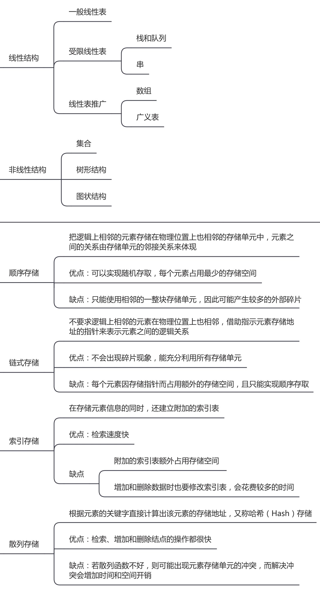

王道 408 数据结构笔记
# 第一章 绪论
# 数据结构的基本概念
基本概念和术语
- 数据是信息的载体
- 数据元素是数据的基本单位，由若干个数据项（最小单位）组成
- 数据对象是具有相同性质的数据元素的集合
- 数据类型分为原子类型、结构类型、抽象数据类型（抽象数据类型可以定义一个完整的数据结构）
- 数据结构是存在某种关系的数据元素的集合，包括逻辑结构、存储结构与数据的运算
- 不定长文件是指 记录的长度不固定
- 存储数据时，要存储 元素的值 和 元素之间的关系
数据结构三要素
- 逻辑结构
- 逻辑结构指数据元素之间存在的逻辑关系，是固有的客观联系
- 逻辑结构分为线性结构与非线性结构，比如：线性表、集合、树、图
- 存储结构
- 存储结构又称为物理结构，指数据结构在计算机中的表示（映像），是计算机内部的存储方法
- 存储结构主要有：顺序存储、链式存储、索引存储、散列存储
- 数据的运算（算法）
- 算法包括运算的定义（取决于逻辑结构，体现算法功能）与实现（取决于存储结构，体现于操作步骤）
- 逻辑结构与存储结构的关系
- 一种逻辑结构通过映像便可以得到它的存储结构
- 例如顺序表、哈希表、链表这样的表述，它们既体现了逻辑结构（均为线性），又体现了存储结构（顺序、散列、链式）。而这样的表述我们往往就直接称之为数据结构
- 例如有序表，它只体现了逻辑结构（线性），而存储结构是未知的（可以是顺序、链式……）
- 不存在只体现存储结构而不体现逻辑结构的表述
- 逻辑结构独立于存储结构
思维导图

# 算法的基本概念
- 算法是 问题求解步骤的描述
- 算法是 解决问题的有限运算序列
- 算法的 5 个重要特性：有穷性、确定性、有效性（可行性）、输入、输出
- 一个好的算法的目标：正确性、可读性、健壮性、高效率与低存储量需求
- 算法原地工作：不需要任何额外的辅助，算法所需要的辅助空间不随着问题的规模而变化，是一个确定的值
# 算法分析
- 空间复杂度指算法耗费存储空间的数量级
- 时间复杂度指算法所有语句被重复执行次数总和的数量级
- 问题的规模：例如，某数组能存储 n 个变量，那么问题的规模就是 n
- 时间复杂度是问题的规模的函数：
- 常见时间复杂度比较：
- 巧记：常对幂指阶（常数 < 对数 < 幂函数 < 指数 < 阶乘）
- log 表示以 2 为底的对数
# 题目与总结
时间复杂度的计算是考试重点。选择题直接计算即可，但如果出在应用题上，需要注意推导过程的书写
计算方法
- 循环条件包含主体变量，将执行次数 t 代入该条件再计算
- 循环条件与主体变量无关，采用数学归纳法或直接循环计数
- 复杂度是在最坏情况下取得的
- 多项相加：取数量级最大的
- 线性表 (a1, a2, ..., an) 以链接方式存储时，访问第 i 位置元素的时间复杂度为 O (n)
- 常用公式
- 等差数列前 n 项和:
- 等比数列前 n 项和：
- 循环的时间复杂度总结：
例 1：
int i = 1; | |
while (i <= n) | |
i = i * 2; |
每次 i *= 2，执行次数 t += 1，即 2^t <= n，得 t <= log n，则 T (n) = O (log n)
例 2：
int i = 3; | |
while ((i + 1) * (i + 1) < n) | |
i = i + 1; |
i 的初值不为 1 或 0，则令 i = t + 3，有 (t + 3 + 1) * (t + 3 + 1) < n，得 t < √n - 4，即 T (n) = O (√n)
例 3：
for(i = n - 1; i > 1; i--) | |
for(j = 1; j < i; j++) | |
a++; |
外循环的迭代次数为 (n − 1) − 1，内循环每次的迭代次数为 i - 1，则 T (n) = 1 + 2 + 3 + ... + (n - 2) = (n - 2) * (n - 1) / 2 ，即 T (n) = O (n^2)
例 4：
for(i = 1; i < n; i *= 2) | |
for(j = 0; j < i; j++) | |
a++; |
设外循环的迭代次数为 t，则 i = 2^t <n，内循环每次的迭代次数为 i，则 T (n) = 1 + 2 + 4 + ... + 2^t = 2^(t+1) - 1 < 2n - 1，即 T (n) = O (n)
例 5：
int fact(int n) | |
{ | |
if (n <= 1) return 1; | |
return n * fact(n - 1); | |
} |
对于递归函数，直接得 T (n) = 1 + T (n - 1) = k + T (n - k) = 1 * (n - 1) + T (1) = n，即 T (n) = O (n)
例 6：
int fact(int n) | |
{ | |
if (n <= 1) return 1; | |
return n * fact(n / 2); | |
} |
T (n) = 1 + T (n / 2) = 1 + (1 + T (n / 4)) = 1 + 1 + 1 + ... + T (1)，递归调用次数为 t，则 2^t = n，t = log n，即 T (n) = O (log n)
例 7：
两个长度分别为 m 和 n 的有序表，合并为长度为 m+n 的有序表，不论升序还是降序，结果都为：O (max (m, n))
# 第二章 线性表
# 线性表的基本概念
线性表的定义
- 线性表是具有相同数据类型的 n 个数据元素的有限序列
- 线性表的特点
- 表中元素具有逻辑上的顺序性，有先后次序
- 表中元素都是数据元素，每个元素都是单个元素
- 表中元素的数据类型都相同，占有相同大小的存储空间
- 表中元素具有抽象性，即仅讨论元素间的逻辑关系，不考虑具体内容
- 线性表是逻辑结构，表示元素一对一的相邻关系
- 顺序表、链表是存储结构，表示在计算机中数据的存储方式
# 线性表的顺序表示
顺序表的定义
- 顺序表指线性表的顺序存储，用一组地址连续的存储单元存储
- 顺序表是一种随机存取的存储结构，存储密度大
- 顺序表最主要特点是随机访问，通过首地址与元素序号在 找到指定元素
- 一般用数组表示顺序表，线性表从 1 开始，数组下标从 0 开始
顺序表上基本操作的实现
- 插入结点 O (n)
- 删除结点 O (n)
- 按值查找 O (n)
# 线性链表及其操作
单链表的定义
- 单链表指线性表的链式存储，用一组任意的存储单元来存储数据元素
- 为了建立元素之间的线性关系，对每个链表结点，还要存放一个指向后继的指针
- 头指针用以标识单链表，如果其值为 NULL，表示空表
- 在第一个结点前附加一个结点，成为头结点，可以不记录信息，也可以记录表长
- 设置头结点，便于空表与非空表的统一处理
单链表的基本操作
- 建表 O (n)
- 头插法：将存有读入数据的新结点插入到当前链表表头
- 使用头插法会导致读入数据与生成链表顺序相反
- 尾插法：增加一个尾指针，以使新结点直接插入到表尾
- 头插法：将存有读入数据的新结点插入到当前链表表头
- 查找 O (n)
- 按序号查找
- 按值查找
- 插入结点 O (n)
- 一般指在某结点的后面插入新结点，即后插操作
- 删除结点 O (n)
- 求表长 O (n)
- 注意：链表长度不包括头结点（如果有）
双链表
- 在单链表基础上增加前驱指针
循环链表
- 对于循环单链表，尾结点指针不是指向 NULL，而是头结点
- 对于循环双链表，在循环单链表基础上，头结点的前驱指针指向尾结点
静态链表
- 静态链表借助数组来描述链式存储结构，结点的指针域的值是下一结点的相对地址（数组下标），最后以 -1 或其他值域外的值表示结束
- 静态链表的大小固定
- 插入和删除时不需要移动元素
- 查找元素和单链表一样，只能采用顺序访问方式
- 静态链表操作起来明显不够方便，其存在的意义在于适用于不支持指针的语言
存储密度
- 结点大小为 k 的块链结构：表示一共有 k 个链表结点
- 数据：单个结点中的数据所占的空间 a
- 数据域：所有结点中的数据所占的空间之和 ak
- 指针：单个结点中的指针所占的空间 b
- 指针域：所有结点中的指针所占的空间之和 bk
- 存储密度
顺序表与链表的比较
- 从逻辑结构来看，都是线性结构。
- 从物理结构来看，顺序表可以随机存取，存储数据密度高，但是分配与改变空间不变；链表空间离散，修改方便，但是不可随机存储，存储数据密度低。
- 从创建来看，顺序表需要申请一片大小适合的空间；而链表无所谓。
- 从销毁来看，顺序表需要将 length 设置为 0，从逻辑上销毁，再从物理上销毁空间，如果是静态分配的静态数组，系统会自动回收空间，而如果是动态数组，需要手动释放；链表逐点进行释放。
- 从增加删除来看，顺序表都要对后续元素进行前移或后移，时间复杂度为 O (n)，主要来自于移动元素；而对于链表插入或删除元素只用修改指针就可以了，时间复杂度也为 O (n)，主要来自于查找目标元素，但是链表的查找元素所花费的时间可能远小于移动元素的时间。
- 从查找来看，顺序表因为有顺序所以按位查找时间复杂度为 O (1)，如果按值查找时间复杂度为 O (n)，如果值是有序的则可以通过二分查找等方式降低在 O (log n) 的时间内找到；如果是链表的查找无论是按位还是按值都是 O (n) 的时间复杂度。
# 题目与总结
- 算法题会给出一个很简单的需求，可以用比较常规的方法做，但往往会有很巧妙的做法，和面试试题的风格接近
- 常见指针
- 双指针：用于同时遍历两个数组。例如：两个有序数组的合并
- 快慢双指针：用于寻找数组或链表中的位置。例如：利用 “二倍速” 指针，一次遍历就能找到链表尾和链表的中间位置
- 数组
- 改变位置但是前后顺序不变：根据题目要求分成几个部分，分别逆置，最后整体逆置。假设分成 ab 两部分，则
- 删除第 i 个元素需要移动 n−i−1 次，插入到 i 位置需要移动 n-i 次
- 链表
- 在选择题中常考代码的执行顺序和指针的位置，可以通过画图快速解决
- 单链表中，可以通过数据互换降低时间复杂度
- 在 P 结点前插入新结点 X：将 X 结点插入 P 结点后面，然后将 P 与 X 中存储的数据互换
- 删除 P 结点：将 P 结点的下一个结点的数据复制到 P 结点中，然后删除 P 结点的下一个结点
- 但是，当 P 指向尾结点时，这个方法就会出错（直接删除 P 指向的节点是错误的，因为 P 节点的前一个节点的 next 指针仍然指向 P 节点原来所在的地址，但是节点已经被删除了，next 指针指向的地址是无效的数据）。所以，最好的办法仍然是双指针
- 注意：部分题目会忽略这种错误情况，怎么说呢...，如果出题人都没考虑这种情况，那也就别较真了～
毕竟，学习的目的是为了考试，做题的目的是为了得分
- 出现部分倒序：逆置部分结点，用三个结点（前中后）依次迭代，使中结点指向前结点，最后让头结点指向前结点
- 线性表需要在某位置进行某操作，选什么结构最适合
- 经常插入和删除：链表
- 经常操作链表的表头和表尾：双循环链表 + 头结点 / 尾结点
- 经常存取指定序号的元素 / 元素的前驱 / 元素的后继、在表尾插入删除：顺序表
【王道 2.2 应用第 12 题】【2013 408 真题】求长度为 n，值域为 n 的整数序列中出现次数大于 n / 2 的元素的值
- 时间 O (n) 空间 O (n)：由于值域同样只有 n，可以另开辅助数组记录各元素出现次数，再根据次数是否大于 n / 2 求得结果（得分 10/15）
- 时间 O (n log n) 空间 O (1)：将数组进行排序，则同值的元素连续出现，记录每个元素连续出现的次数求得结果，其中排序 O (n log n)，记录次数 O (n)（得分 11/15）
- 时间 O (n) 空间 O (1)：将第一个整数假设为结果，计数器初始值为 1，从前向后扫描数组，如果当前元素与当前假设的结果的值一致，计数器 +1，否则 -1，当计数器为 0 时，将当前元素赋值给当前结果，计数器重新记为 1。重复上述过程直到扫描结束，如果最后计数器值大于 n / 2，则答案为当前结果，否则不存在主元素（得分 15/15）
【王道 2.3 选择第 7 题】给定有 n 个元素的一维数组，建立一个有序单链表的最低时间复杂度是？
- 虽然是求最低，但所给一维数组依旧认定为随机数组，不能认为已经有序，故答案为排序所需时间复杂度 O (n log n)，而非逐一插入的时间复杂度 O (n)
- 若选择题没有 O (n log n) 这个选项，此时可以选 O (n^2)
【算法题】逆置顺序表
void Inverse() | |
{ | |
int l[] = { 1, 2, 3, 4, 5 }; | |
int length = 5; | |
int left = 0; | |
int right = length - 1; | |
for (left; left < length / 2; left++) | |
{ | |
int temp = l[right]; | |
l[right] = l[left]; | |
l[left] = temp; | |
right--; | |
} | |
} |
【算法题】逆置单链表（带头结点）
两种思路：3 指针正向遍历、2 指针正向遍历 + 插入头结点
//3 指针 | |
void Inverse_3(Node* list) | |
{ | |
struct Node* prev = NULL; // 前一个结点 | |
struct Node* current = list->next; // 当前结点 | |
struct Node* next = NULL; // 下个结点 | |
while (current != NULL) | |
{ | |
next = current->next; // 保存下一个结点 | |
current->next = prev; // 当前结点指向前一个结点 | |
prev = current; // 前一个结点更新为当前结点 | |
current = next; // 当前结点更新为下一个结点 | |
} | |
list->next = prev; // 头结点指向新的头结点 | |
} | |
//2 指针 | |
void Inverse_2(Node* list) | |
{ | |
struct Node* prev = NULL; | |
struct Node* current = list->next; | |
list->next = NULL; | |
while (current != NULL) | |
{ | |
prev = current; | |
current = current->next; | |
prev->next = list->next; | |
list->next = prev; | |
} | |
} | |
void Inverse_run() | |
{ | |
// 创建链表（有头结点） | |
Node* list = new Node | |
{ | |
-1, new Node{ | |
0, new Node{ | |
1, new Node{ | |
2, new Node{ | |
3, new Node{ | |
4 }}}}} | |
}; | |
Inverse_3(list); | |
Inverse_2(list); | |
} |
【算法题】删除顺序表中值等于 x 的元素
void DeleteX() | |
{ | |
int l[] = { 1, 2, 4, 5, 2, 2 }; | |
int length = 6; | |
int x = 2; | |
int k = 0; // 等于 x 的个数 | |
for (int i = 0; i < length; i++) | |
{ | |
if (l[i] == x) | |
{ | |
k++; | |
} | |
else | |
{ | |
l[i - k] = l[i]; | |
} | |
} | |
length -= k; | |
} |
【算法题】有序表合并
注意：写伪代码不要用 vector，直接用数组就行
// 思想：双指针遍历 | |
void CombineArray_0(vector<int> a, vector<int> b) | |
{ | |
int size_a = a.size(); | |
int size_b = b.size(); | |
vector<int> t(size_a + size_b); | |
int p_a = 0; | |
int p_b = 0; | |
int p_t = 0; | |
while (p_a < size_a && p_b < size_b) | |
{ | |
if (a[p_a] < b[p_b]) | |
{ | |
t[p_t++] = a[p_a++]; | |
} | |
else if (a[p_a] > b[p_b]) | |
{ | |
t[p_t++] = b[p_b++]; | |
} | |
else | |
{ | |
t[p_t++] = a[p_a++]; | |
t[p_t++] = b[p_b++]; | |
} | |
if (p_a >= size_a || p_b >= size_b) | |
{ | |
while (p_a < size_a) | |
{ | |
t[p_t++] = a[p_a++]; | |
} | |
while (p_b < size_b) | |
{ | |
t[p_t++] = b[p_b++]; | |
} | |
} | |
} | |
} | |
void CombineArray() | |
{ | |
vector<int> a = { 0, 2, 2, 4, 5, 9, 12 }; | |
vector<int> b = { 1, 2, 5, 6, 8, 9, 11, 12, 13, 15 }; | |
CombineArray_0(a, b); | |
} |
【算法题】将所有奇数移动到所有偶数之前
#include <iostream> | |
#include <vector> | |
using namespace std; | |
// 时间 O (n)，空间 O (1) | |
void Move() | |
{ | |
vector<int> a = { 1, 4, 4, 1, 6, 2, 8, 5, 1 }; | |
int length = a.size(); | |
int p = 0; // 前指针 | |
int q = length - 1; // 后指针 | |
int temp = 0; | |
while (p < q) | |
{ | |
while (p < q && a[p] % 2 == 1) p++; | |
while (p < q && a[q] % 2 == 0) q--; | |
if (p < q) | |
{ | |
temp = a[p]; | |
a[p] = a[q]; | |
a[q] = temp; | |
p++; | |
q--; | |
} | |
} | |
} |
【算法题】最大连续子元素的和
// 思想：遍历数组，累加元素，累加后出现负数则跳过，每次计算都能得到当前元素的最大值，然后与整体的最大值对比即可 | |
void MaxSum_0(vector<int> a) | |
{ | |
int max = a[0]; | |
int max_temp = a[0]; | |
for (int i = 1; i < a.size(); i++) | |
{ | |
if (max_temp <= 0) | |
{ | |
max_temp = a[i]; | |
} | |
else | |
{ | |
max_temp += a[i]; | |
} | |
if (max < max_temp) | |
{ | |
max = max_temp; | |
} | |
} | |
cout << "最大值：" << max; | |
} | |
void MaxSum() | |
{ | |
vector<int> a = { -2, -1, 2, 3, -1, 5 }; | |
MaxSum_0(a); | |
} |
【算法题】求两个数组的交集
注意：写伪代码不要用 algorithm 和 unordered_set，其他模版类也同样不能用
#include <iostream> | |
#include <vector> | |
#include <unordered_set> // 用于哈希表 | |
#include <algorithm> // 用于排序 | |
using namespace std; | |
// 哈希表 | |
vector<int> Intersection_0(vector<int>& arr1, vector<int>& arr2) | |
{ | |
unordered_set<int> set1(arr1.begin(), arr1.end()); | |
vector<int> result; | |
for (int num : arr2) | |
{ | |
if (set1.find(num) != set1.end()) | |
{ | |
result.push_back(num); | |
set1.erase(num); // 防止重复加入 | |
} | |
} | |
return result; | |
} | |
// 先排序，后遍历 | |
vector<int> Intersection_1(vector<int>& arr1, vector<int>& arr2) | |
{ | |
sort(arr1.begin(), arr1.end()); | |
sort(arr2.begin(), arr2.end()); | |
vector<int> result; | |
int i = 0, j = 0; | |
while (i < arr1.size() && j < arr2.size()) | |
{ | |
if (arr1[i] == arr2[j]) | |
{ | |
if (result.empty() || result.back() != arr1[i]) | |
{ | |
// 去重 | |
result.push_back(arr1[i]); | |
} | |
++i; | |
++j; | |
} | |
else if (arr1[i] < arr2[j]) | |
{ | |
++i; | |
} | |
else | |
{ | |
++j; | |
} | |
} | |
return result; | |
} | |
void Intersection() | |
{ | |
vector<int> arr1 = { 1, 2, 2, 1, 8, 7, 2, 9 }; | |
vector<int> arr2 = { -1, 2, 2, 3, 7, 9 }; | |
vector<int> result; | |
cout << "哈希表: "; | |
result = Intersection_0(arr1, arr2); | |
for (int num : result) | |
{ | |
cout << num << " "; | |
} | |
cout << endl; | |
cout << "排序: "; | |
result = Intersection_1(arr1, arr2); | |
for (int num : result) | |
{ | |
cout << num << " "; | |
} | |
} |
【算法题】去除重复元素
// 时间 O (n)，空间 O (n) | |
// 以单链表（没有头结点）为例，数组同理 | |
struct Node | |
{ | |
int data; | |
struct Node* next; | |
}; | |
void RemoveDuplicate(Node* list, int length) | |
{ | |
Node* p = list; // 当前结点 | |
Node* q = nullptr; // 上一个结点 | |
vector<int> hash(length, -1); // 初始化哈希表，伪代码直接用数组 | |
int key; | |
while (p != nullptr) | |
{ | |
// 处理冲突，注意重复元素 | |
key = p->data % length; | |
while (hash[key] != -1 && hash[key] != p->data) | |
{ | |
key = (key + 1) % length; | |
} | |
if (hash[key] != p->data) | |
{ | |
hash[key] = p->data; | |
} | |
else | |
{ | |
q->next = p->next; | |
free(p); | |
p = q; | |
} | |
q = p; | |
p = p->next; | |
} | |
} | |
void RemoveDuplicate_run() | |
{ | |
// 20 15 14 7 15 21 7 | |
Node* list = new Node | |
{ | |
20, new Node{ | |
15, new Node{ | |
14, new Node{ | |
7, new Node{ | |
15, new Node{ | |
21, new Node{ | |
7 }}}}}} | |
}; | |
RemoveDuplicate(list, 7); | |
} |
【算法题】寻找未出现的最小正整数
// 常规方法：遍历 n 次数组，每次寻找一个正整数，在某次没找到或者遍历完成时，得到答案 | |
// 满分方法：分析正整数与数组的数量关系。 | |
// 正整数是连续的，若数组整体连续，数组中的最大值就是 n，那么未出现的最小正整数是 n+1，并且答案不会超过这个值 | |
// 若数组不连续，则中间必定有空位，而最小的空位就是答案 | |
// 可以创建一个辅助数组，记录出现过的，然后遍历数组找到答案 | |
void FindMissingNumber() | |
{ | |
int a[] = { -1, 4, 3, 1, 8, 2, 14, 5 }; | |
int length = 8; | |
// 伪代码这样写：int temp [length] = { 0 }; | |
int temp[8] = { 0 }; | |
int res = length + 1; | |
for (size_t i = 0; i < length; i++) | |
{ | |
if (a[i] > 0 && a[i] <= length) | |
{ | |
temp[a[i] - 1] = 1; | |
} | |
} | |
for (size_t i = 0; i < length; i++) | |
{ | |
if (temp[i] == 0) | |
{ | |
res = i + 1; | |
break; | |
} | |
} | |
} |
【算法题】两数相加（力扣）
题目描述：有两个非空链表。每个链表的第一个结点表示个位，第二个结点表示十位，第三个结点表示百位...... 要求将两数相加，返回一个相同形式的链表
#include <iostream> | |
using namespace std; | |
// 定义链表结点 | |
struct ListNode | |
{ | |
int val; | |
ListNode* next; | |
ListNode(int x) : val(x), next(nullptr) {} | |
}; | |
// 链表两数相加的函数 | |
ListNode* addTwoNumbers(ListNode* l1, ListNode* l2) | |
{ | |
ListNode* dummyHead = new ListNode(0); // 创建虚拟头结点 | |
ListNode* p = l1, * q = l2, * curr = dummyHead; | |
int carry = 0; // 进位 | |
// 遍历两个链表，直到两个链表都为空 | |
while (p != nullptr || q != nullptr) | |
{ | |
int x = (p != nullptr) ? p->val : 0; // 如果 p 为空，取值为 0 | |
int y = (q != nullptr) ? q->val : 0; // 如果 q 为空，取值为 0 | |
int sum = carry + x + y; // 当前位的和 | |
carry = sum / 10; // 更新进位 | |
curr->next = new ListNode(sum % 10); // 创建新结点存储当前位的数字 | |
curr = curr->next; | |
if (p != nullptr) p = p->next; // 移动 p 到下一个结点 | |
if (q != nullptr) q = q->next; // 移动 q 到下一个结点 | |
} | |
// 如果有进位，创建新结点 | |
if (carry > 0) | |
{ | |
curr->next = new ListNode(carry); | |
} | |
return dummyHead->next; // 返回结果链表（跳过虚拟头结点） | |
} | |
// 打印链表 | |
void printList(ListNode* node) | |
{ | |
while (node != nullptr) | |
{ | |
cout << node->val; | |
if (node->next != nullptr) cout << " -> "; | |
node = node->next; | |
} | |
cout << endl; | |
} | |
void addTwoNumbers_run() | |
{ | |
// 示例链表 1: 342 (2 -> 4 -> 3) | |
ListNode* l1 = new ListNode(2); | |
l1->next = new ListNode(4); | |
l1->next->next = new ListNode(3); | |
// 示例链表 2: 465 (5 -> 6 -> 4) | |
ListNode* l2 = new ListNode(5); | |
l2->next = new ListNode(6); | |
l2->next->next = new ListNode(4); | |
// 相加 | |
ListNode* result = addTwoNumbers(l1, l2); | |
// 输出结果链表 | |
printList(result); // 结果应该是 7 -> 0 -> 8 (807) | |
} |
# 第三章 栈、队列、数组、广义表
# 栈
栈的基本概念
- 栈是一种运算受限的线性表，只允许在一端进行插入或删除操作。
- 数学性质：n 个不同元素进栈，出栈元素不同排列的个数为 ，这就是卡特兰数。
- 栈的基本操作：
- InitStack (&S) { S.top = -1 } 初始化空栈
- StackEmpty (S) { S.top == -1 } 判断栈是否为空
- Push (&S, x) { S.data [++S.top] = x } 入栈，先加一，后入栈
- Pop (&S, &x) { x = S.data [S.top--] } 出栈，先出栈，后减一
- GetTop (S, &x) 读栈顶元素 x 并返回
- DestroyStack (&S) 销毁栈，释放空间
- S.top == MaxSize - 1 栈满
- S.top + 1 栈长
- 若题目没有做出限制，当算法需要用栈作为辅助时，可以直接使用这些函数（建议在代码后面添加注释）
堆栈的顺序存储结构
- 顺序栈的实现：用地址连续的存储单元存放数据（数组），一个指针指向栈顶
- 共享栈：两个顺序栈共享一个一维数组，栈底分别设在两端，栈顶向中间延伸。判断栈满：右栈顶 - 左栈顶 = 1
堆栈的链式存储结构
- 采用链式存储的栈称为链栈
- 链栈没有头结点，直接指向栈顶元素。栈顶是链头，栈底是链尾
- 出栈：top = top->next;
- 优点：便于多个栈共享存储空间，提高效率，且不存在栈溢出的情况
# 队列
队列的基本概念
- 队列是一种只允许在表的一端插入，另一端删除的线性表。
- 队列的操作：
- InitQueue (&Q) 初始化空队列
- QueueEmpty (Q) 判断队列是否为空
- EnQueue (&Q, x) 入队，先存入，后加一
- DeQueue (&Q, &x) 出队，先取出，后加一
- GetHead (Q, &x) 读队头元素 x 并返回
队列的顺序存储结构
- 顺序存储
- 循环队列：普通队列会出现假溢出情况，故引用循环队列，将队列从逻辑上视为一个环，利用取余运算实现
- 由于循环队列在队空与队满的判断条件是等价的，故需要一些处理方式来区分
- 牺牲一个单元来区分，约定：队头在队尾下一位置作为队满的标志
- 增设表示元素个数的数据成员
- 判空：Q.front == Q.rear
- 队满：(Q.rear + 1) % MaxSize == Q.front
- 队长：(Q.rear - Q.front + MaxSize) % MaxSize
- 由于循环队列在队空与队满的判断条件是等价的，故需要一些处理方式来区分
队列的链式存储结构
- 队列的链式存储：采用链式存储的队列称为链队列。
- 链队列往往设计成带头结点的单链表，且带有队头指针和队尾指针。
双端队列
- 双端队列指两端都可以入队出队操作的队列，两端称为前端和后端。
- 受限双端队列：某端的输入或输出受限
# 栈和队列的应用
- 栈在括号匹配中的应用：自左至右扫描表达式，若遇左括号，则将左括号入栈，若遇右括号，则将其与栈顶的左括号进行匹配，若配对，则栈顶的左括号出栈，否则出现括号不匹配错误，如果需要匹配但是栈空说明有单独的左或右括号，也匹配失败。如果结束，栈为空则正常结束，否则不匹配。
- 栈在表达式求值中的应用
- 后缀表达式可以轻松获得运算符关系，且不用处理括号（用栈处理）
- 后缀表达式中符号的先后顺序就是机算的顺序，为了保证手算与机算相同，优先计算左边的符号
- 后缀表达式计算：从左往右，遇到数字就入栈，遇到操作符就出栈两个数字并计算，然后将计算结果入栈
- 后缀左优先：先出栈的是右操作数
- 前缀右优先：先出栈的是左操作数
- 中缀转后缀的手算方法：A + B * (C - D) - E / F -- 加括号 --> ( ( A + ( B * ( C - D ) ) ) - ( E / F ) ) -- 将符号向右移出当前所在的层级 --> ( ( A ( B ( C D ) - ) * ) + ( E F ) / ) - -- 去除所有括号 --> A B C D - * + E F / -
- 同样适用于前缀
- 后缀转中缀只需要将这个过程反过来即可，或者按照后缀表达式的计算方法，利用栈转换
- 栈在递归中的应用
- 可以用栈来模拟递归过程，以消除递归
- 对于同一个问题，非递归算法效率通常比递归算法更高
- 队列在层次遍历中的应用
- BFS
- 树的层序遍历
- 队列在计算机系统中的应用
- 缓冲
- 页面置换算法
一般情况下不会考后缀表达式的代码题。为了保证手算与机算相同，可以测试一下代码。
#include <iostream> | |
#include <stack> | |
#include <string> | |
#include <cctype> | |
using namespace std; | |
// 判断运算符优先级 | |
int getPriority(char op) | |
{ | |
if (op == '*' || op == '/' || op == '%') return 2; | |
else if (op == '+' || op == '-') return 1; | |
else return 0; | |
} | |
string infixToPostfix(string infix) | |
{ | |
string postfix; | |
stack<char> opStack; | |
for (char c : infix) | |
{ | |
if (isdigit(c) || c == '.') | |
{ | |
postfix += c; | |
} | |
else if (c == '(') | |
{ | |
opStack.push(c); | |
} | |
else if (c == ')') | |
{ | |
while (!opStack.empty() && opStack.top() != '(') | |
{ | |
postfix += " "; | |
postfix += opStack.top(); | |
opStack.pop(); | |
} | |
opStack.pop(); // 弹出左括号 | |
} | |
else | |
{ | |
while (!opStack.empty() && getPriority(opStack.top()) >= getPriority(c)) | |
{ | |
postfix += " "; | |
postfix += opStack.top(); | |
opStack.pop(); | |
} | |
postfix += " "; | |
opStack.push(c); | |
} | |
} | |
while (!opStack.empty()) | |
{ | |
postfix += " "; | |
postfix += opStack.top(); | |
opStack.pop(); | |
} | |
return postfix; | |
} | |
float calculatePostfix(string postfix) | |
{ | |
stack<float> operandStack; | |
string operandStr; | |
for (char c : postfix) | |
{ | |
if (c == ' ') | |
{ | |
if (!operandStr.empty()) | |
{ | |
operandStack.push(stof(operandStr)); | |
operandStr.clear(); | |
} | |
} | |
else if (isdigit(c) || c == '.') | |
{ | |
operandStr += c; | |
} | |
else | |
{ | |
float operand2 = operandStack.top(); | |
operandStack.pop(); | |
float operand1 = operandStack.top(); | |
operandStack.pop(); | |
switch (c) | |
{ | |
case '+': | |
operandStack.push(operand1 + operand2); | |
break; | |
case '-': | |
operandStack.push(operand1 - operand2); | |
break; | |
case '*': | |
operandStack.push(operand1 * operand2); | |
break; | |
case '/': | |
operandStack.push(operand1 / operand2); | |
break; | |
case '%': | |
operandStack.push((int)operand1 % (int)operand2); | |
break; | |
} | |
} | |
} | |
return operandStack.top(); | |
} | |
int main_() | |
{ | |
string infix; | |
cout << "请输入中缀表达式："; | |
getline(cin, infix); | |
string postfix = infixToPostfix(infix); | |
cout << "后缀表达式：" << postfix << endl; | |
float result = calculatePostfix(postfix); | |
cout << "计算结果：" << result << endl; | |
return 0; | |
} |
# 数组和特殊矩阵
# 数组
数组的概念
- 数组是由 n 个相同类型的数据元素构成的有限序列
- 数组是线性表的推广。一维数组可视为一个线性表，二维数组可视为其元素均为定长线性表的线性表，以此类推
数组的存储结构
- 对于多维数组有两种映射方法：按行优先与按列优先。一般默认按行优先
# 特殊矩阵
特殊矩阵的压缩存储
- 压缩存储：多个值相同的元素只分配一个存储空间，0 元素不分配
- 特殊矩阵：如对称矩阵、上三角矩阵、对角矩阵
- 常考题目：将三角矩阵的一半（包括对角线）顺序存入一维数组中，问数组的索引与三角矩阵的元素位置的之间数量关系。
- 解法：等差数列求和 + 未满一行 / 列的元素个数
- 下三角矩阵：矩阵中满足 i >= j，
- 上三角矩阵：矩阵中满足 i <= j， （n 为矩阵每行元素个数）
- 注意：如果没有特别说明，矩阵的第一个元素是 a [1][1] （符合线性代数），数组的第一个元素是 a [0]，如果有说明，例如：数组的第一个元素是 a [1]，此时数组中的位置为 k + 1
- 注意：如果是下三角矩阵，但是 i <= j，此时要将 i 和 j 互换，上三角矩阵同理
稀疏矩阵存储
- 稀疏矩阵指非零元素个数远小于零个数的矩阵
- 存储方式：三元组（行，列，值）、十字链表法、带行 / 列指针向量的链接存储
- 三元组
- 需要存储的数据包括：三元组、行数、列数、非 0 元素个数
- 失去随机存取功能，每次存取都需要遍历三元组表
- 三元组的结构（有很多种）：常见的有 (i, j, v) 和 (v, i, j)，v 表示元素值或非 0 元素个数，当 v 表示元素值时，i 和 j 表示元素的行和列；当 v 表示非 0 元素个数时，i 和 j 表示总行数和总列数
- 注意：如果题目没有给你三元组的结构，直接问你 (a, b, c) 对应的矩阵，除了三元组的结构以外，还要注意矩阵的第一个元素是 a [1][1] 还是 a [0][0]，有的题目就会考你这两个的区别，
也不知道它考这种东西是为了什么，就不能按照数学中的定义规范标准吗？，此时只能把所有情况全都遍历一遍，看看有没有符合的选项
- 注意：如果题目没有给你三元组的结构，直接问你 (a, b, c) 对应的矩阵，除了三元组的结构以外，还要注意矩阵的第一个元素是 a [1][1] 还是 a [0][0]，有的题目就会考你这两个的区别，
- 注意三元组相关问题的写法
- 问题：写出矩阵对应的三元组线性表。答案的写法：((行，列，值)，...) 例如：( (1, 2, 3), (4, 5, 6), (7, 8, 9) )
- 问题：写出矩阵对应的三元组线性表的顺序存储。答案的写法：画一个 (非零元素个数 + 1) * 3 的表格，第一行的三个元素分别填写 矩阵的总行数、矩阵的总列数、非 0 元素个数，其余每行分别填写 行、列、值
- 带行指针向量的链接存储（设矩阵为 m*n）
- 顺序加链式存储方法，类似于树的孩子表示法
- 行指针向量：一个大小为 m+1 的数组，其中第 i 个元素存储第 i 行中第一个非零元素在链表中的位置（或者索引）
- 链表：存储矩阵中所有非零元素，一个单链表存一行，每个单链表都有相同的行号。每个结点包含：非零元素所在的列号、值、指向本行下一个非零元素结点的指针
# 广义表
广义表定义
- 广义表 (Lists，又称列表) 是一种非连续性的数据结构，是线性表的一种推广
- 表中的每一项可以是单个元素（原子），也可以是广义表（子表），但如果广义表的每个元素都是原子，它就变成了线性表
- 广义表难以用顺序存储结构实现
- 广义表的表尾总是一个广义表
- 长度：元素的个数
- 深度：括号的层次数，例如：L (a, (b, c, d), e) 长度为 3 深度为 2
常用操作
- Head (L) 返回广义表的第一个元素
- Tail (L) 返回广义表去掉第一个元素后的部分
- 例 Ls = ((A, B), (C, D))
- Head(Ls) = (A, B)
- Tail(Ls) = ((C, D))
- Head(Head(Ls)) = A
- Tail(Tail(Ls)) = ()
- Head(Tail(Ls)) = (C, D)
# 题目与总结
【王道 3.2 选择第 8 题】【2011 408 真题】循环队列存储在数组 A [0..n-1] 中，队列非空时 front 和 rear 分别指向队头与队尾。初始时队列为空，且第一个进入队列的元素存储在 A [0]，则 front 和 rear 的初值为？
- 反向思考。首先插入后的队首与队尾指向的位置均为 0，且插入元素只会更改 rear 的值，则 front 在插入前仍为 0，而 rear 需要 -1，对于循环队列，0 的前一个位置为 n - 1，故答案分别为 0, n - 1
【王道 3.3 选择第 11 题】【2012 408 真题】将中缀表达式 a+b-a*((c+d)/e-f)+g 转换为等价的后缀表达式 ab+acd+e/f-*-g+ 时，用栈存放暂时不能确定运算次序的操作符，转换过程中栈的操作符个数最大为？
- 无括号时正常乘除在先加减在后。有括号时，遇到右括号，完成对应的左括号之后范围内所有运算。
- 比如本题，+ 直接运算，可弹出，- 不动，因为后面是个 ，加上第一个 (，遇到第一个) 时，第二个 ( 及里面的 + 弹出，遇到第二个 ) 时，第一个 ( 及里面的 / 与 - 弹出， 运算完成，- * 先后弹出，+ 直接运算，弹出
- 整个过程中，操作符最大的时刻在 - * (/-，即遇到第二个) 之前
# 第四章 串
# 串的定义和实现
- 串的定义：串是由零个或多个字符组成的有限序列，为字符串的简称
- 串的存储结构（串有三种存储方式）
- 定长顺序存储表示：分配一个固定长度
- 堆分配存储表示：按串长动态分配，使用指针指向串的起始地址
- 块链存储表示：类似于线性表链式存储结构，具体实现时可以使每个结点存放一个或多个字符
- 长度为 n 的字符串，设重复字符数为 k（例如：多 2 个 ‘a’、多 1 个 ‘b’，则 k=3），子串的个数为：
- 注意：空串、字符串本身 都包含在内
- 注意：C 语言中，字符串（字符类型的数组）以 '\0' 为结尾，写代码的时候可能会用到
# 串的模式匹配
# 简单的模式匹配算法
- 子串的定位操作通常称为串的模式匹配，求的是子串（模式串）在主串中的位置。
- 暴力匹配算法的最大问题就是对主串一位位进行对比，当后面的匹配失败后只能回溯主串，只移动一位重新匹配
- 最坏时间复杂度 O (mn)，但是一般情况下接近于 O (m+n)
- 答题时以最坏的为准
# KMP 算法
由于模式串在最开始就是已知的，所以在失配前主串和模式串必然相等，我们可以选择模式串中能匹配的部分重新匹配，而不是直接从头开始
计算 next 数组
- 模式串的数组下标与 next 数组的数组下标相同
- 前两个元素是固定的，注意模式串数组下标的起始位置
- 若从 1 开始，前两个元素是：0 1
- 若从 0 开始，前两个元素是：-1 0
- 当 j 指针所在位置不匹配时，在不匹配的位置的左边画一个分界线，将模式串右移（j 指针向左移动），每移一步就匹配一次（分界线左边，上下位置对应的元素做对比），第一次匹配成功或匹配失败时停止，此时 j 指向第几号元素（注意数组下标的起始位置），next 数组值就是几
复杂度
- 使用 KMP 算法时需要先计算不同模式串 P 的 next 数组，时间复杂度为 O (m)，然后使用 KMP 算法计算，时间复杂度为 O (n)，从而平均时间复杂度为 O (m+n)，最坏时间复杂度为 O (mn)
- KMP 算法对于重复部分比较多的模式串匹配效果更好
KMP 算法只会考手算 next 数组。为了保证手算与机算相同，可以测试一下代码。
#include <iostream> | |
using namespace std; | |
// 构建 next 数组 | |
void GetNext(char* pattern, int* next) | |
{ | |
int patternLength = strlen(pattern); | |
next[0] = -1; | |
int i = 0, j = -1; | |
while (i < patternLength - 1) | |
{ | |
if (j == -1 || pattern[i] == pattern[j]) | |
{ | |
i++; | |
j++; | |
next[i] = j; | |
} | |
else | |
{ | |
j = next[j]; | |
} | |
} | |
} | |
// 使用 KMP 算法进行字符串匹配 | |
void KMPMatch(char* text, char* pattern) | |
{ | |
int textLength = strlen(text); | |
int patternLength = strlen(pattern); | |
int* next = new int[patternLength]; | |
GetNext(pattern, next); | |
cout << "next数组为："; | |
for (int k = 0; k < patternLength; k++) | |
{ | |
cout << next[k] << " "; | |
} | |
int i = 0, j = 0; | |
while (i < textLength) | |
{ | |
if (j == -1 || text[i] == pattern[j]) | |
{ | |
i++; | |
j++; | |
if (j == patternLength) | |
{ | |
printf("在位置 %d 处找到匹配\n", i - j); | |
j = next[j]; | |
} | |
} | |
else | |
{ | |
j = next[j]; | |
} | |
} | |
delete[] next; | |
} | |
void KMP_run() | |
{ | |
char text[] = "ABABDABACDABABCABAB"; | |
char pattern[] = "ABABAA"; | |
KMPMatch(text, pattern); // 使用 KMP 算法进行字符串匹配 | |
} |
# KMP 算法的进一步优化
KMP 算法的 next 数组存在一定问题，当前索引的值匹配失败时，那么模式串的其他同样值的地方也一定会匹配失败
对于多个字符重复的字符串，则 nextval 的优化程度会更高
计算 nextval 数组
- 先计算 next 数组
- 注意数组下标的起始位置
- 设模式串为 S，j 表示第几个元素，从左向右遍历 next 数组，若 S [j] == S [next [j]]，则 next [j] = next [next [j]]
- 遍历结束后的 next 数组就是 nextval 数组
# 题目与总结
【算法题】寻找两个字符串的最大匹配子串
// 暴力枚举 O (n^2) | |
void MaxString_0(string s, string t) | |
{ | |
int i = 0; | |
int j = 0; | |
// 最长匹配串 | |
int start = 0; | |
int end = 0; | |
int length = 0; | |
int length_current = 0; | |
for (int k = 0; k < t.length(); k++) | |
{ | |
i = 0; | |
j = k; | |
while (i < s.length() && j < t.length()) | |
{ | |
if (s[i] == t[j]) | |
{ | |
length_current++; | |
if (length < length_current) | |
{ | |
start = i - j + k; | |
end = i; | |
length = length_current; | |
} | |
i++; | |
j++; | |
} | |
else | |
{ | |
i = i - j + k + 1; | |
j = k; | |
length_current = 0; | |
} | |
} | |
} | |
} | |
// 动态规划 O (nm) | |
void MaxString_1(const string& s, const string& t) | |
{ | |
int n = s.length(); | |
int m = t.length(); | |
// 创建一个二维 dp 数组，初始值为 0 | |
vector<vector<int>> dp(n + 1, vector<int>(m + 1, 0)); | |
int maxLength = 0; // 记录最长子串的长度 | |
int endIndex = 0; // 记录最长子串在 s 中的结束位置 | |
// 动态规划过程 | |
for (int i = 1; i <= n; ++i) | |
{ | |
for (int j = 1; j <= m; ++j) | |
{ | |
if (s[i - 1] == t[j - 1]) | |
{ | |
// 字符匹配 | |
dp[i][j] = dp[i - 1][j - 1] + 1; | |
// 更新最大长度和结束位置 | |
if (dp[i][j] > maxLength) | |
{ | |
maxLength = dp[i][j]; | |
endIndex = i - 1; | |
} | |
} | |
} | |
} | |
// 输出结果 | |
if (maxLength > 0) | |
{ | |
cout << "最长匹配子串: " << s.substr(endIndex - maxLength + 1, maxLength) << endl; | |
} | |
else | |
{ | |
cout << "没有匹配子串" << endl; | |
} | |
} | |
// 测试 | |
void MaxString() | |
{ | |
string s = "abcdefhijklmn"; | |
string t = "abcdefghijklmn"; | |
//MaxString_0(s, t); | |
MaxString_1(s, t); | |
} |
【算法题】无重复字符的最长子串（力扣）
思想：滑动窗口
// 滑动窗口模版 | |
// 外层循环扩展右边界，内层循环扩展左边界 | |
for (int l = 0, r = 0 ; r < n ; r++) | |
{ | |
// 当前考虑的元素 | |
while (l <= r && check()) | |
{ | |
// 区间 [left, right] 不符合题意，扩展左边界 | |
} | |
// 区间 [left, right] 符合题意，统计相关信息 | |
} |
本题
#include <iostream> | |
#include <unordered_set> | |
#include <string> | |
using namespace std; | |
// 无重复字符的最长子串 | |
int LengthOfLongestSubstring(string s) | |
{ | |
unordered_set<char> set; // 用于去重 | |
int res = 0; // 记录结果 | |
int left = 0; // 左指针 | |
// 右指针逐步扩展 | |
for (int right = 0; right < s.size(); right++) | |
{ | |
char ch = s[right]; // 当前需要处理的字符 | |
// 如果字符在集合中存在，则缩小窗口 | |
while (set.find(ch) != set.end()) | |
{ | |
set.erase(s[left]); // 移除左指针指向的字符 | |
left++; // 移动左指针 | |
} | |
set.insert(ch); // 将当前字符加入集合 | |
res = max(res, right - left + 1); // 更新最大长度 | |
} | |
return res; | |
} | |
void LongestSubstring() | |
{ | |
string s = "aabcabcdda"; | |
cout << LengthOfLongestSubstring(s) << endl; | |
} |
# 第五章 树与二叉树
# 树的基本概念
# 树的基本概念
- 树：n 个结点的有限集（树是一种递归的数据结构，适合于表示具有层次的数据结构）
- 有且仅有一个特定的根结点
- n > 1 时，除去根结点外的其他结点又可分为若干个互不相交的子树
- 根结点：只有子结点没有父结点的结点。除了根结点外，树任何结点都有且仅有一个前驱。
- 分支结点：有子结点也有父结点的结点。
- 叶子结点：没有子结点只有父结点的结点。
- 非叶子结点：又称顶点，除了叶子结点以外的所有结点。
- 祖先：根结点到结点的路径上的任意结点都是该结点的祖先。
- 双亲：靠近根结点且最靠近该结点的结点。
- 兄弟：有共同双亲结点的结点。
- 堂兄弟：双亲结点在同一层的结点。
- 空树：结点数为 0 的数。
- 子树：当 n>1 时，其余结点可分为 m 个互不相交的有限集合，每个集合本身又是一棵树，其就是根结点的子树。
- 结点的度：一个结点的孩子（分支、子树）个数。
- 树的度：树中结点的最大度数。
- 树的高度（深度）：多少层。
- 结点的层次（深度）：从上往下数。
- 结点的高度：从下往上数。
- 两结点之间的路径：由两个结点之间所经过的结点序列构成。
- 两结点之间的路径长度：路径上所经过的边的个数。
- 树的路径长度：指树根到每个结点的路径长的总和，根到每个结点的路径长度的最大值是树的高。
- 有序树：树各结点的子树从左至右有次序不能互换。
- 无序树：树各结点的子树从左至右无次序可以互换。
- 森林：m 棵互不相交的树集合。加上一个共同根结点后即可认为是一棵树
# 树的性质
- 树的结点数 = 边数 + 1
- 树的结点数 = 所有结点度数之和 + 1（+1 是因为根结点）
- 度为 m 的树第 i 层至多 个结点（例如完全二叉树）
- 高度为 h 的 m 叉树至多有 个结点
- 高度为 h 的 m 叉树至少有 h 个结点，度为 m 的树至少有 h+m-1 个结点
- 具有 n 个结点的 m 叉树最大高度为 n-(m-1)
- 具有 n 个结点的 m 叉树最小高度为
- 已知高度最小时所有结点都有 m 个孩子，所以 ，从而得到
- 树的度 m 代表至少一个结点度是为 m，至少有 m+1 个结点，且一定是非空树。而 m 叉树指所有结点的度都小于等于 m，可以是空树
- 森林中树的个数 = 结点数 - 边数
# 二叉树
# 二叉树的定义
- 二叉树是度不大于 2 的有序树，即每个结点至多 2 棵子树，且有左右之分
- 空树与只有根结点的情况都是二叉树
- 即使某个结点只有一棵子树，也需要明确其是左子树还是右子树
- 5 种形态：空、只有根、只有左、只有右、左右都有
# 特殊形态的二叉树
- 满二叉树：高度为 h 且含有 个结点的二叉树
- 每层都含有最多的结点，只有最后一层有叶子结点，不存在度为 1 的结点，所以可以按层序编号
- 按层序从 1 开始编号，结点 i 的左孩子为 2i，右孩子为 2i+1，父结点（如果存在）为 向下取整
- 按层序从 0 开始编号，结点 i 的左孩子为 2i+1，右孩子为 2i+2，父结点（如果存在）为 向下取整
- 完全二叉树：最后一层可以不含有最多结点的满二叉树，只有最后两层有叶子结点，最多只有一个度为 1 的结点，且一定为左孩子
- 为分支结点， 为叶子结点
- 二叉排序树：左子树上所有结点的关键字均小于根结点的关键字；右子树上所有结点的关键字均大于根结点的关键字；左右子树又各是一棵二叉排序树
- 平衡二叉树：树上任一结点的左子树和右子树的深度之差不超过 1
# 二叉树的性质
- 非空二叉树叶子结点数 = 度为 2 的结点数 + 1
- 二叉树的第 i 层至多有 个结点
- 高度为 h 的二叉树至多有 个结点
- 高度为 h 的完全二叉树至少有 个结点
- 具有 n 个结点的完全二叉树的高度（最低高度） 或
- 或
- 注意：必须是完全二叉树，有的题目会在这里挖坑（问：n 个结点的二叉树的高度？正确答案：不确定）
- 若二叉树的结点数为偶数，则度为 1 的结点数为奇数
- 完全二叉树最多只有一个度为 1 的结点，度为 0 和度为 2 的结点的个数和一定为奇数，若完全二叉树有 2k 个结点，则必然有 ，若完全二叉树有 2k-1 个结点，则必然有
# 二叉树的存储结构
- 二叉树的顺序存储结构
- 一般只用于满二叉树与完全二叉树，否则太浪费空间
- 数组下标从 1 开始更恰当，以满足父子结点之间的编号关系
- 二叉树的链式存储结构
- 每个结点包含结点值、指向左右孩子结点的指针
- 在含有 n 个结点的二叉链表中，含有 n+1 个空链域
- 在一棵有 n 个结点的二叉树中，非空指针的数量等于 n-1，因为一棵树中存在 n-1 条边，每一条边对应一个指向子结点的指针。总的指针域数量是 2n，所以空指针域数量是 n+1
- 如果要保存父结点的位置，可以添加一个父结点指针，从而变成三叉链表，含有 n+2 个空链域
# 二叉树的遍历
二叉树的遍历
- 二叉树的遍历指按某条搜索路径访问每个结点有且仅有一次
- 前序遍历：先根结点，再左子树，再右子树
- 中序遍历：先左子树，再根结点，再右子树
- 后序遍历：先左子树，再右子树，再根结点
- 层次遍历：以树按层次编号的顺序进行遍历
- 层次遍历可以 将树转换成数组、可以求树的宽度
- 根据算数表达式的分析树的先序、中序、后序遍历方式可以得到前缀、中缀、后缀表达式
- 前序 / 中序 / 后序遍历中所有叶子结点的先后顺序相同
- 若 m 是 n 的祖先，后序遍历可以得到 n 到 m 的路径
- 时间复杂度为 O (n)，空间复杂度为 O (n)
由遍历序列恢复二叉树
- 由前序 / 后序 / 层序遍历加上中序遍历，可唯一确定一棵二叉树
- 前序 / 层序遍历中根结点在最前，后序遍历中根结点在最后，由中序序列分辨出哪些结点在左边、哪些结点在右边，以此类推即可
注意：交换二叉树中所有的左右子树，使用后序遍历最合适。实际上，前序、中序、后序都行，而且代码也都差不多，但答案给的是后序遍历，那就以答案为准 毕竟目标是得分，而不是实现这个功能
中序遍历的代码
void InorderTraversal(TreeNode* tree) | |
{ | |
if (tree == nullptr) return; | |
InorderTraversal(tree->left); | |
cout << tree->data << " "; | |
InorderTraversal(tree->right); | |
} |
后序遍历交换左右子树
void ExchangeTree(TreeNode* tree) | |
{ | |
if (tree == nullptr) return; | |
ExchangeTree(tree->left); | |
ExchangeTree(tree->right); | |
TreeNode* temp = tree->left; | |
tree->left = tree->right; | |
tree->right = temp; | |
} |
层序遍历求树每一层的宽度
#include <iostream> | |
#include <queue> | |
#include <vector> | |
using namespace std; | |
// 定义二叉树节点结构 | |
struct TreeNode | |
{ | |
int val; | |
TreeNode* left; | |
TreeNode* right; | |
TreeNode(int x) : val(x), left(nullptr), right(nullptr) {} | |
}; | |
// 计算二叉树每一层的宽度 | |
vector<int> levelWidths(TreeNode* root) | |
{ | |
vector<int> widths; // 存储每一层的宽度 | |
if (root == nullptr) return widths; | |
queue<TreeNode*> q; // 队列用于层序遍历 | |
q.push(root); | |
while (!q.empty()) | |
{ | |
int levelSize = q.size(); // 当前层的节点数 | |
widths.push_back(levelSize); // 保存当前层的宽度 | |
// 遍历当前层的所有节点，并将下一层的节点加入队列 | |
for (int i = 0; i < levelSize; ++i) | |
{ | |
TreeNode* current = q.front(); | |
q.pop(); | |
if (current->left) q.push(current->left); // 加入左子节点 | |
if (current->right) q.push(current->right); // 加入右子节点 | |
} | |
} | |
return widths; | |
} | |
// 创建测试用的二叉树 | |
TreeNode* createTestTree() | |
{ | |
TreeNode* root = new TreeNode(1); | |
root->left = new TreeNode(2); | |
root->right = new TreeNode(3); | |
root->left->left = new TreeNode(4); | |
root->left->right = new TreeNode(5); | |
root->right->right = new TreeNode(6); | |
return root; | |
} | |
void levelWidths_run() | |
{ | |
TreeNode* root = createTestTree(); // 创建测试二叉树 | |
vector<int> widths = levelWidths(root); // 计算每一层的宽度 | |
cout << "每一层的宽度是: "; | |
for (int width : widths) | |
{ | |
cout << width << " "; | |
} | |
cout << endl; | |
} |
# 递归问题的非递归算法的设计
- 用栈来模拟递归的过程
- 效率更高，但编写起来更麻烦
中序遍历：
- 沿着根的左孩子结点依次入栈，直到左孩子为空。表示找到了最左边的可以输出的结点。
- 栈顶元素出栈并访问。
- 若栈顶元素的右孩子为空，则继续执行步骤二。
- 若栈顶元素的右孩子不为空，则对其右子树执行步骤一。
前序遍历与中序遍历类似，只是第一步就需要访问中间结点。
后序非递归遍历算法的思路（不重要）：从根结点开始，将其入栈，然后沿其左子树一直往下搜索，直到搜索到没有左孩子的结点，但是此时不能出栈并访问，因为如果其有右子树，还需按相同的规则对其右子树进行处理。直至上述操作进行不下去，若栈顶元素想要出栈被访问，要么右子树为空，要么右子树刚被访问完（此时左子树早已访问完），这样就保证了正确的访问顺序。
# 线索二叉树
基本概念
- 线索二叉树将结点的前驱或后继的指针存放到叶子结点的空指针中，以更为方便地遍历二叉树
- 需要额外增加两个标志域以表示其左右指针是指向子结点还是前驱或后继
- 指针为空时，左指针指向前驱（若没有前驱则为空），右指针指向后继（若没有后继则为空）
- 注意题目中的描述，前驱线索化只改动空的左指针，后驱线索化只改动空的右指针，线索化需要改动所有空指针
- 将二叉树线索化需要一次遍历
- 为方便，可以在二叉树的线索链表中添加一个头结点，头结点的左指针指向二叉树根结点，右指针指向最后一个结点
线索二叉树的遍历
- 前序 / 中序遍历扫描一遍指针即可
- 只有后序线索树的遍历需要利用栈
# 树和森林
# 树的存储结构
- 双亲表示法：是一种顺序存储方式，用一个保存结点的一维数组，每个结点保存数据和父结点的索引。查找双亲方便，但是查找孩子就只能从头遍历
- 孩子表示法：是顺序加链式存储方法，顺序存储所有元素，添加一个 firstChild 域，指向第一个孩子结构体的指针，孩子结构体包括元素位置索引与指向下一个孩子结构体的 next 指针。寻找孩子比较方便，但是寻寻找双亲需要遍历 n 个结点 n 个孩子链表
- 孩子兄弟表示法：是一种链式存储方式，定义了两个指针，分别指向第一个孩子与右兄弟，类似于二叉树，可以利用二叉树来实现对树的处理。也称为二叉树表示法。可以将树操作转换为二叉树的操作，但是查找双亲麻烦。可以为每个结点设置一个指向双亲的结点。
# 二叉树与树、树林之间的转换
- 树转换为二叉树：遵循左孩子右兄弟原则，由于根结点没有兄弟，所以对应的二叉树没有右子树
- 与孩子兄弟表示法很像，但是要注意：树转换为二叉树是有严格的左右子树规定的，而孩子兄弟表示法不分左右子树
- 树转换为二叉树后，用二叉链表法表示，既符合树转换为二叉树的定义，又符合树的孩子兄弟表示法
- 森林转换为二叉树：先将森林中的每棵树转换为二叉树，从左向右，依次将右边的二叉树作为右结点
# 树和森林的遍历
表格中每行的遍历结果是等价的
| 树 | 森林 | 二叉树 |
|---|---|---|
| 先根遍历 | 先序遍历 | 前序遍历 |
| 后根遍历 | 中序遍历 | 中序遍历 |
# 转换关系
假设森林为 F，树为 T，转换而来的二叉树为 B
结点关系
- 树转换为二叉树时，树的每个分支节结点的所有子结点的最右子结点无右孩子，根结点转换后也无右孩子
- T 有 n 个结点，叶子结点个数为 m，则 B 中无右孩子的结点个数为 n-m+1 个
- F 有 n 个非终端结点，则 B 中无右孩子的结点有 n+1 个
- 根据森林与二叉树转换规则 “左孩子右兄弟”，B 中右指针域为空代表该结点没有兄弟结点。森林中每棵树的根结点从第二个开始依次连接到前一棵树的根的右孩子，因此最后一棵树的根结点的右指针为空，这里有一个。另外，每个非终端结点即代表有孩子，其所有孩子结点不论有多少个兄弟，在转换之后，最后一个孩子的右指针一定为空，故树 B 中右指针域为空的结点有 n+1 个
边关系
- F 有 n 条边、m 个结点，则 F 包含 T 的个数为 m-n
- 若有 n 条边，则如果全部组成最小的树每个需要两个结点，总共需要 2n 个结点，组成 n 根树。假定 2n>m，则还差 2n-m 个结点才能两两成树，所以少的这些结点不能单独成树，导致有 2n-m 个结点只能跟其他现成的树组成结点大于二的树。所以此时只能组成 n-(2n-m)=m-n 棵树
# 二叉排序树
二叉排序树的定义
- 二叉排序树的左子树所有结点小于根结点，右子树所有结点大于根结点
- 二叉排序树的中序遍历必然严格单调递增
二叉排序树的删除
- 右子树空，则用左儿子结点填补
- 左子树空，则用右儿子结点填补
- 左右子树均非空，则用右子树的中序序列的第一个结点填补
二叉排序树的查找
- 查找效率取决于树的高度：
- 如果左右子树高度差不超过 1（即平衡二叉树），则平均查找长度为 O (log n)
- 如果是一棵单支树（即类似于单链表），则为 O (n)
# 哈夫曼树
# 基本概念
- 哈夫曼树（最优二叉树）：带权路径长度最短的二叉树。不一定是完全二叉树
- WPL = 树中所有叶结点带权路径长度（路径长度 * 结点权值）之和 = 树中所有非叶结点的权值之和
- 对于 n 个带权叶结点构成的所有二叉树中，WPL 值最小的为哈夫曼树
# 构造和性质
构造
- 每次选取两棵根结点权值最小的树作为新结点的左右子树，以此反复
- 哈夫曼树没有度为 1 的结点
- 哈夫曼树不一定都是二叉树，但常考二叉树
性质
- m 叉哈夫曼树中叶子结点数为 n，非叶子结点数为
- n 个结点构造的二叉哈夫曼树，共 2n-1 个结点，有 n 个叶子，有 n-1 个非叶子
- 高度为 h 的哈夫曼树，结点数至少为 2h-1
# 哈夫曼编码
等长编码
- 构造完全二叉树，使所有结点都在同一层，且都是叶子结点
- 保持结构不变，尽量让权值变小
- 唯一的优点：解码效率高
哈夫曼编码
- 哈夫曼编码基于哈夫曼树，利用哈夫曼树对 01 的数据进行编码，来表示不同的数据含义，因为哈夫曼树必然权值最小，所以对于越常使用的编码越短，越少使用的编码越长，所以发送信息的总长度是最小的。
- 将编码使用次数作为权值构建哈夫曼树，然后根据左 0 右 1 的原则，按根到叶子结点的路径就变成了哈夫曼编码。
- 哈夫曼编码是可变长度编码，即允许对不同字符用不等长的二进制表示，也是一个前缀编码，没有一个编码是另一个编码的前缀。
- 树中叶结点的路径就是编码结果
- 哈夫曼编码也可以用于压缩
- 缺点：解码效率低、需要存储编码表
一般情况下不会考哈夫曼树的代码题。为了保证手算与机算相同，可以测试一下代码。
#include <iostream> | |
#include <vector> | |
#include <queue> | |
#include <string> | |
using namespace std; | |
// 哈夫曼树的结点定义 | |
struct HuffmanNode | |
{ | |
string name; // 名称 | |
int weight; // 权值 | |
HuffmanNode* left, * right; // 左子树和右子树指针 | |
// 构造函数 | |
HuffmanNode(string n, int w) : name(n), weight(w), left(nullptr), right(nullptr) {} | |
}; | |
// 自定义比较器，用于优先队列排序 | |
struct Compare | |
{ | |
bool operator()(HuffmanNode* a, HuffmanNode* b) | |
{ | |
return a->weight > b->weight; // 按权值从小到大排序 | |
} | |
}; | |
// 构造哈夫曼树的函数 | |
HuffmanNode* buildHuffmanTree(vector<string>& names, vector<int>& weights) | |
{ | |
// 创建优先队列（最小堆） | |
priority_queue<HuffmanNode*, vector<HuffmanNode*>, Compare> pq; | |
// 将每个名称和权值构造为结点并加入优先队列 | |
for (int i = 0; i < names.size(); i++) | |
{ | |
pq.push(new HuffmanNode(names[i], weights[i])); | |
} | |
// 构造哈夫曼树 | |
while (pq.size() > 1) | |
{ | |
// 取出两个最小权值的结点 | |
HuffmanNode* left = pq.top(); | |
pq.pop(); | |
HuffmanNode* right = pq.top(); | |
pq.pop(); | |
// 创建新的父结点，权值为两个子结点的权值和 | |
HuffmanNode* parent = new HuffmanNode("", left->weight + right->weight); | |
parent->left = left; | |
parent->right = right; | |
// 将新的父结点加入优先队列 | |
pq.push(parent); | |
} | |
// 最终队列中剩下的唯一结点就是哈夫曼树的根结点 | |
return pq.top(); | |
} | |
// 递归打印哈夫曼树（前序遍历） | |
void printHuffmanTree(HuffmanNode* root, string prefix = "") | |
{ | |
if (!root) return; | |
if (!root->name.empty()) | |
{ | |
cout << "名称: " << root->name << ", 权值: " << root->weight << ", 编码: " << prefix << endl; | |
} | |
else | |
{ | |
cout << "名称: " << root->weight << ", 权值: " << root->weight << endl; | |
} | |
printHuffmanTree(root->left, prefix + "0"); | |
printHuffmanTree(root->right, prefix + "1"); | |
} | |
void huffmanTree_run() | |
{ | |
// 输入数据 | |
vector<string> names = { "A", "B", "C", "D", "E", "F", "G", "H", "I" }; | |
vector<int> weights = { 15, 6, 7, 12, 25, 4, 6, 1, 15 }; | |
// 构造哈夫曼树 | |
HuffmanNode* root = buildHuffmanTree(names, weights); | |
// 打印哈夫曼树 | |
cout << "前序遍历" << endl; | |
printHuffmanTree(root); | |
} |
# 并查集
并查集
- 将一个集合划分为互不相交的子集。类似于森林。
- 一般用树或森林的双亲表示作为并查集的存储结构，每个子集用一个树表示。
- 用数组元素的下标表示元素名，用根结点的下标表示子合集名，根结点的双亲结点为负数。
并查集的基本操作
- 查找：查找两个元素是否属于同一个集合 O (n)
- 合并：如果两个元素不属于同一个集合，且所在的两个集合互不相交，则合并这两个集合 O (1)
- 路径压缩：如果一个结点只有一个子结点，且子结点也只有一个子结点，那么这条链路会非常长，即对应的树会很高，影响查询效率。所以把沿途所有的结点都设为根结点的孩子
例如子集 、、
存储结构为：
| 数据元素 | A | B | C | D | E | F | G | H | I |
|---|---|---|---|---|---|---|---|---|---|
| 数组下标 | 0 | 1 | 2 | 3 | 4 | 5 | 6 | 7 | 8 |
| 双亲 | -4 | 0 | -2 | 0 | 3 | -3 | 5 | 2 | 5 |
其中，负数表示这个点有子结点，其绝对值为子集合的元素数量，正数表示其父结点的索引值
# 题目与总结
- 树和二叉树
- 计算：结点数量、高度、空指针域数量、最大值、最小值
- 二叉树的遍历
- 二叉树与遍历序列之间互相推导
- 线索二叉树的指针指向
- 利用中序遍历将表达式树（二叉树）转为中缀表达式（用括号表示操作符的计算次序）
- 交换左右子树：将访问中间结点的代码改成交换左右子树的代码即可
完全二叉树的第 6 层有 8 个叶子结点，则树结点个数最多为？
- 第 6 层结点数为 2^(6-1) = 32 个，有 8 个叶子结点，考虑结点数最多的情况，其余结点都有 2 个子结点，则第 7 层结点数为 (32 - 8) * 2 = 48 个
- 前 6 层结点数为 2^6 - 1 = 63 个，则树结点个数最多为 63 + 48 = 111
【王道 5.1 选择第 7 题】【2010 408 真题】在一棵度为 4 的树中，若有 20 个度为 4 的结点，10 个度为 3 的结点，1 个度为 2 的结点，10 个度为 1 的结点，则树的叶结点个数是？
- 根据树的性质，树的结点数 = 树的分支数 + 1 = 树的度数 + 1
- 叶结点个数 + 20 + 10 + 1 + 10 = 20 * 4 + 10 * 3 + 1 * 2 + 10 * 1 + 1
- 解得：叶结点个数 = 82
【王道 5.3 选择第 29 题】二叉树在线索化后，仍不能有效求解的问题是？
A. 前序线索二叉树求前序后继
B. 中序线索二叉树求中序后继
C. 中序线索二叉树求中序前驱
D. 后续线索二叉树求后序后继
- 线索二叉树不能有效求解，意味着在遍历过程中线索无法指向实际存在的前驱 / 后继。
- 对于前序 / 中序的遍历过程，它们的共同点在于一定会在叶子结点遍历到与该结点不直接相连的结点上，那么线索也就必定存在；而后序遍历是可能有非叶子结点遍历过去的，而非叶子结点不能建立线索，故无法继续遍历到它的实际后继。
- 故只能选 D
【王道 5.4 选择第 27 题】若度为 m 的哈夫曼树中，叶子结点个数为 n，则非叶子结点的个数为？
- 度为 m 的哈夫曼树，根据其建立过程，每次选择根结点度数最小的 m 棵树进行合并，意味着其所有结点的度数只有 0 和 m 两种可能。
- 已知总结点个数 = 分支数 - 1 = 非叶子结点个数 y * m - 1 = n + y，解得：y = (n - 1) / (m - 1)，最后向上取整。
# 第六章 图
# 图的基本概念
图的定义
- 图不可以为空图，点集不得为空，但边集可以
- 图是顶点集和边集构成的二元组，即图 G 由顶点集 V 和边集 E 组成，记为 G = (V, E)，其中 V (G) 表示图 G 中顶点的有限非空集，E (G) 表示图 G 中顶点之间的关系（边）集合
- 若 ，则用 |V| 表示图 G 中顶点的个数，也称图 G 的阶，，用 |E| 表示图 G 中边的条数
名词术语
- 有向图：边集由有向边（弧）构成，用 <,> 表示
- 无向图：边集由无向边（边）构成，用 (,) 表示
- 简单图：没有重复边，没有顶点到自身的边，否则为多重图（多重图不考）
- 完全图：任意两点之间都存在边，共 n (n-1)/2 个边
- 有向完全图：任意两点之间都存在两条方向相反的弧，共 n (n-1) 个弧
- 子图：边集与点集均为另一个图的子集
- 当边集等价时，则称为生成子图
- 无向图的连通、连通图、连通分量
- 连通：两点之间存在路径，则两点连通
- 连通图：图中任意两点都是连通的
- 极大连通子图：又称连通分量。连通图的极大连通子图是其自身，非连通图有多个极大连通子图
- 极小连通子图：即生成树，对于非连通图没有意义
- 有向图的强连通、强连通图、强连通分量
- 强连通：a -> b 和 b -> a 之间都有路径
- 强连通图：图中任意两点都是强连通的
- 极大强连通子图：又称强连通分量，与极大连通子图类似
- 不存在极小强连通子图
- 生成树、生成森林
- 生成树：连通图中，包含全部顶点的极小连通子图
- 生成森林：非连通图中，由生成树构成的森林
- 度、入度、出度
- 度（无向图）：与顶点相连的边数
- 度（有向图）：入度与出度之和
- 入度：以顶点为终点的有向边数
- 出度：以顶点为起点的有向边数
- 网：边有权值的图称为带权图，也称为网
- 稠密图、稀疏图：边数多就是稠密图，反之为稀疏图，均为模糊而相对的概念
- 路径：从一个点到另一个点所经过的顶点序列
- 路径长度：沿路径所经过的边数
- 回路：环
- 简单路径、简单回路：结点不重复出现
- 距离：最短路径
- 树与图：树是不存在回路且连通的无向图。（树与图是逻辑的区别）
- 有向树：形如树的有向图，一个顶点的入度为 0，其余顶点入度均为 1
连通、边、顶点之间的关系
- 无向图的边的最大值：n (n-1)/2
- 有向图的弧的最大值：n (n-1)
- n 个顶点的连通图，最少要 n-1 个边，构成线形或树形
- n 个顶点的强连通图，最少要 n 个弧，构成环形
- 非（强）连通情况下边最多的情况：由 n-1 个顶点构成（有向）完全图，此时加入一个顶点形成非（强）连通图
- n 个顶点和 m 条边的无向图的连通分量最多为：n - m
- 判断连通分量和强连通分量的数量
- 当某个顶点只有出弧而没有入孤时，其他顶点无法到达这个项点，不可能与其他顶点和边构成强连通分量（这个单独的顶点构成一个强连通分量）
- 依次选择无入弧顶点构成连通分量，删除该顶点以及所有以之为结尾的弧
- 最后得到的每个顶点就是一个强连通分量，其数量就是强连通分量数
- 对于 n 个顶点的环，有 n 棵生成树
- 因为 n 个顶点的环的生成树的顶点为 n-1，去掉任意一条边就能得到一棵生成树，环一共有 n 条边，所以可以去掉 n 条，得到 n 棵生成树
- 若 n 个顶点、e 条边的无向图是一个森林，则一共有 n-e 棵树
- 设一共有 x 棵树，则只需要 x-1 条边就能将森林连接为一整棵树，由树的性质得到 边数 + 1 = 顶点数，即 e+(x-1)+1=n，解得 x=n-e
度的关系
- 无向图的全部顶点的度的和等于边数的两倍
- 因为每条边都与两个顶点关联。
- 有向图的全部顶点的入度与出度之和相等，并且等于边数
- 因为每条有向边都有一个起点和终点。
- 对于 n 个顶点的无向图，每个顶点的度最大为 n-1
- 因为任意一个顶点可以与其他 n-1 个顶点相联（默认是简单图，不能自己连向自己）
- 对于 n 个顶点的有向图，每个顶点的度最大为 2n-2
- 因为任意一个顶点可以与其他 n-1 个顶点有指向相反的两条边
# 图的存储方法
- 邻接矩阵
- 一维数组存顶点信息，二维数组（矩阵）存储边
- 设邻接矩阵为 ， 的元素 表示点 i 到点 j 长度为 n 的路径数目
- 无向图的邻接矩阵：对称矩阵
- 有向图的邻接矩阵：行出列入，第 i 行上所有非零元素的个数等于顶点 i 的出度，第 i 列上所有非零元素的个数等于顶点 i 的入度
- 创建矩阵的时间复杂度
- 邻接表
- 邻接表：与树的孩子表示法类似。表示顶点的出度
- 逆邻接表：只能存储有向图。表示顶点的入度
- 邻接表顶点数 n 决定顶点表个数，边数 e 决定边表个数
- 有向图有边结点 e 个
- 无向图有边结点 2e 个
- 创建表的时间复杂度
- 十字链表：用顶点结点和弧结点存储有向图
- 邻接多重表：用顶点结点和边结点存储无向图
# 图的遍历
广度优先搜索 BFS
- 广度优先是每一次遍历都要把所有的相邻顶点全部遍历到
- 非递归，需要使用队列
- BFS 可以解决非带权图的单源最短路径问题（因为广度优先搜索按照距离由近到远）
深度优先搜索 DFS
- 深度优先是每一次遍历只遍历最近的一个一直深入
- 递归算法
- 邻接矩阵方式唯一，所以深度优先序列唯一。邻接表方式不唯一，所以深度优先序列不唯一
- 使用 DFS 算法递归地遍历一个无环有向图，并在退出递归时输出相应顶点，这样得到的顶点序列是逆拓扑排序（因为栈的先进后出特性）
广度 / 深度优先生成树
- 广度优先生成树：根据广度优先遍历可以将所有第一次访问顶点时的路径组合生成一个广度优先生成树，若图顶点为 n 个，则生成树边一共有 n-1 条。因为保存图的数据结构若是不唯一，则其广度优先生成树也是不唯一的。若邻接矩阵存储则唯一，若邻接表存储则不唯一
- 广度优先生成森林：若图是不连通的，那会生成连通分量个广度优先生成树，就构成了广度优先生成森林
- 深度优先生成树：根据深度优先遍历可以将所有第一次访问顶点时的路径组合生成一个深度优先生成树，若图顶点为 n 个，则生成树边一共有 n-1 条。因为保存图的数据结构若是不唯一，则其深度优先生成树也是不唯一的。如果无向图非连通，则一个顶点出发只能一次性遍历到该顶点所在连通分量的所有顶点
- 深度优先生成森林：若图是不连通的，会生成连通分量个深度优先生成树，构成了深度优先生成森林
- 广度优先生成树的高度 小于等于 深度优先生成树的高度
图遍历与图连通性
- 若起始顶点到其他各顶点都有路径，那么只需调用一次深度优先或广度优先遍历函数。
- 对强连通图，从任意一顶点出发都只用调用一次深度优先或广度优先遍历函数。
- 遍历时函数调用层数等于该图的连通分量数。（因为存在不同的连通分量需要多次调用才能全部访问到）
# 图的应用
# 最小生成树
最小生成树
- 最小生成树的边的权值之和总是唯一且最小
- 最小生成树的代价 = 所有边的权值之和
- 最小生成树的边数 = 顶点数 - 1 （减去一条边则不连通，增加一条边则会出现回路）
- 如果没有权值相同的边，则最小生成树唯一
- 若一个连通图本身就是一棵树，则其最小生成树就是其本身
- 只用连通图才有生成树，非连通图只有生成森林
- 最小生成树 不一定是 最短路径
Prim 算法
- 每次选取与当前点集合距离最近的点，并且不构成回路
- n 为顶点个数，时间复杂度
- 适用于边多、顶点少的图
Kruskal 算法
- 将边按边权从小到大排，每次选取两端在不同连通分量的边（实际上就是从小到大选边，如果构成回路就放弃这条边）
- 使用堆来存放边（可以二分查找）
- e 为边的个数，时间复杂度
- 适用于边少、顶点多的图
# 最短路径
最短路径一定是简单路径（各个顶点不重复出现）
BFS 算法
- 单源最短路径算法（无权图，每条边的权值全部为 1）
- 定义两个数组，索引号就代表元素的序号，一个数组表示从起点开始到该点的最短路径长度，另一个数组表示从起点开始到该点的最短路径的上一个顶点的索引值。
Dijkstra 算法
- 单源最短路径算法（带权图、无权图）
- 从初始状态开始，依次选取最近的有路径的顶点，每轮选出权值最小的即为最短，以选出的最短顶点为中间结点，寻找到达其他顶点的当前最短路径，然后进行下一轮，直到全部选完
- 时间复杂度
- 不能用于负权值
Floyd 算法
- 多源最短路径算法（带权图、无权图）
- 若没有负权值，对每一个点使用 Dijkstra 算法，也可以得到相同的结果，时间复杂度也相同
- 从初始状态开始，依次选取最短顶点作为中转点，并求出最短路径
- 时间复杂度 ，空间复杂度
- 可以用于负权值，但不能出现负权回路
- 注意：解答题需要写矩阵
# 有向无环图描述表达式
有向无环图
- 若一个有向图中不存在环，则是有向无环图，简称 DAG 图
表达式应用
- 有向无环图可以运用到表达式的表达上，用树表示表达式，将操作数共同的顶点部分删除并将边合并到一起，这就形成了图，从而能精简表达式
- 顶点中不可能出现重复的操作数
- 表达式树不唯一
# 拓扑排序
AOV 网
- AOV 网：Activity On Vertex Network，建立在 DAG（有向无环图）上的网，用点表示活动，用弧表示活动优先级。弧是无权的。
拓扑排序
- 拓扑排序：依次选择入度为 0 的顶点，删除该点和以它为起点的边
- 逆拓扑排序：选择出度为 0 的顶点，也可以用深度优先搜索实现
- 时间复杂度为
- 若无法拓扑排序，则必定存在环
- 即使有向无环图的拓扑序列唯一，也无法唯一确定该图
# 关键路径
AOE 网
- AOE 网：Activity On Edge Network，建立在 DAG（有向无环图）上的网，用顶点表示事件、用带权弧表示活动（开销）
- 只有在某顶点所代表的事件发生后，从该顶点出发的各有向边所代表的活动才能开始
- 只有在进入某顶点的各有向边所代表的活动都已经结束时，该顶点所代表的事件才能发生，部分活动可以并行进行
关键路径
- 只有一个入度为 0 的顶点，即开始顶点（源点），表示整个工程的开始
- 只有一个出度为 0 的顶点，称为结束顶点（汇点），表示整个工程的结束
- 具有最大路径长度（路径各个活动所需时间之和）的路径为关键路径，上面的活动为关键活动
- 最大路径长度就是完成整个工程所需的最短工期，只有加快关键活动进度才能缩短工期
参量
- 事件的最早发生时间：决定了所有从该事件开始的活动能够开工的最早时间
- 一个事件的最早发生时间 = 以该事件为始的弧的活动的最早开始时间
- 从前往后计算
- 事件的最迟发生时间：在不推迟整个工程完成的前提下，该事件最迟必须发生的时间
- 一个事件的最迟发生时间 = min (以该事件为尾的弧的活动的最迟开始时间，最迟结束时间与该活动的持续时间的差)
- 从后往前计算
- 活动的最早开始时间：指该活动弧的起点所表示的事件最早发生时间
- 活动的最迟开始时间：指该活动弧的终点所表示的事件的最迟发生时间与该活动所需时间之差
- 活动的时间余量：在不增加完成整个工程所需总时间的情况下，活动可以拖延的时间
- 时间余量 = 活动的最迟开始时间 - 活动的最早开始时间
求关键路径步骤
- 事件的最早发生时间 ：根据拓扑序列，依次按照所有路径的最大值求出各个事件的最早发生时间（最长路径长度，交叉的顶点取最大值）
- 事件的最迟发生时间 ：终点顶点处 ，根据逆拓扑序列，依次找到以当前顶点为起点的活动，将 活动的终点事件的最迟发生时间 减去 活动时间，得到当前顶点的最迟发生时间（交叉的顶点取最小值）
- 各活动的最早发生时间 e = 起点事件的最早发生时间
- 各活动的最迟发生时间 l = 终点事件的最迟发生时间 - 活动时间
- 求所有活动的时间余量 d = l - e，余量为 0 的活动就是关键活动（也可以直接找 e = l 的活动）
缩短工期
- 关键活动时间增加，整个工程工期延长
- 关键活动时间减少，整个工程工期缩短
- 关键活动时间减少，可能变为非关键活动
- 若有多条关键路径，则必须提高所有关键路径上的关键活动才能缩短工期
# 时间复杂度对比

# 题目与总结
求关键路径
计算各事件的最早发生时间和最迟发生时间
| A | B | C | D | E | F | |
|---|---|---|---|---|---|---|
| 0 | 3 | 2 | 6 | 6 | 8 | |
| 0 | 4 | 2 | 6 | 7 | 8 |
计算各活动的最早发生时间和最迟发生时间
| a | b | c | d | e | f | g | h | |
|---|---|---|---|---|---|---|---|---|
| 0 | 0 | 3 | 3 | 2 | 2 | 6 | 6 | |
| 1 | 0 | 4 | 4 | 2 | 5 | 6 | 7 |
关键活动为：b, e, g
关键路径为：A, C, D, F
# 第七章 查找
# 查找的基本概念
- 查找：在数据集合中寻找满足某种条件的数据元素的过程
- 查找表（查找结构）：用于查找的数据集合，由同一类型的数据元素或记录组成
- 关键字：数据元素中唯一标识该元素的某个数据项的值，使用基于关键字的查找，查找结果应该唯一
- 静态查找表：只查找符合条件的数据元素
- 顺序查找、折半查找、分块查找、散列查找
- 动态查找表：不仅要查找，还要进行插入和删除；不仅要考虑查找速度，还要考虑插入和删除操作是否方便
- 二叉排序树、平衡二叉树、红黑树、B 树、B + 树、散列
- 查找长度：查找运算中，需要对比关键字的次数
- 平均查找长度 ASL：所有查找过程中进行关键字比较次数的平均值 其中 表示查找第 i 个元素的概率（一般情况下认为概率相等）， 表示查找第 i 个元素的查找长度
- 最多比较次数：查找失败时的比较次数
# 顺序查找、折半查找、分块查找
# 顺序查找
- 又称为线性查找，常用于线性表，从头到尾逐个查找
- 无序表的平均查找长度：ASL 查找成功为 ，ASL 查找失败为 n+1
- 哨兵查找：A [0] 不存放元素，而是存放查找目标，遍历元素是从 A [n] 到 A [1]，一共 n 个，查找失败时，会遍历到 A [0]，一共 n+1 个
- 正常查找：A [0] 存放元素，从 A [0] 到 A [n-1] 遍历，查找成功时，直接 return 或 break 打断循环，查找失败时，完成一轮遍历，一共 n 个
- 有序表可以减少平均查找长度：ASL 查找失败为
- 对于顺序查找，无论无序表还是有序表，查找成功的时间都是相同的
- 时间复杂度 O (n)
# 折半查找
折半查找
- 也称为二分查找，只适用于有序的顺序表
- 中间元素 = (left + right) / 2
- 注意：left 和 right 都是数组索引，数组的第一个元素是 A [0]
- ASL 查找成功为（近似值） ，ASL 查找失败为
- 查找成功的 ASL（准确值）：画出折半查找判定树，设第 层结点数为 ，总结点数为 ，
- 画完判定树后要检查一遍，看看有没有缺少的
- 时间复杂度
折半查找判定树
- 折半查找的过程可用二叉树来描述，称为判定树
- 树高为
- 树的高度就是最大比较次数
- 取中间数时向下取整：左子树元素个数等于右子树元素个数 或 左子树元素个数比右子树元素个数少一个
- 取中间数时向上取整：左子树元素个数等于右子树元素个数 或 左子树元素个数比右子树元素个数多一个
- 折半查找判定树一定是一个平衡二叉树
- 折半查找判定树也是一个二叉排序树
折半查找判定树与二叉排序树
- 都是同样的二叉逻辑结构
- 折半查找判定树是已知完整序列，所以总是从中间开始，时间性能为固定的
- 二叉排序树的构造是根据输入来的，如果输入的序列正好是从中间切分的，则时间性能为最好的 ，如果输入的序列恰好有序，则为单枝树，时间性能为最坏的
折半查找的代码
// 折半查找函数 | |
int BinarySearch(int arr[], int size, int target, int& compareCount) | |
{ | |
int left = 0; // 数组的左边界 | |
int right = size - 1; // 数组的右边界 | |
compareCount = 0; // 初始化比较次数 | |
while (left <= right) | |
{ | |
compareCount++; // 每次循环即为一次比较 | |
int mid = (left + right) / 2; // 计算中间位置 | |
// 输出当前比较的元素 | |
cout << "比较第 " << compareCount << " 次: arr[" << mid << "] = " << arr[mid] << endl; | |
// 检查中间元素是否为目标值 | |
if (arr[mid] == target) | |
{ | |
return mid; // 找到目标，返回其索引 | |
} | |
// 如果目标值大于中间值，则目标在右半部分 | |
if (arr[mid] < target) | |
{ | |
left = mid + 1; | |
} | |
// 如果目标值小于中间值，则目标在左半部分 | |
else | |
{ | |
right = mid - 1; | |
} | |
} | |
// 未找到目标值，返回 - 1 | |
return -1; | |
} | |
void BinarySearch_run() | |
{ | |
int arr[] = { 0, 1, 2, 3, 4, 5, 6, 7, 8, 9, 10, 11 }; | |
int length = sizeof(arr) / sizeof(arr[0]); | |
int target = 0; | |
int compareCount = 0; | |
int result = 0; | |
int max = 0; | |
for (size_t i = 0; i < length; i++) | |
{ | |
target = arr[i]; | |
compareCount = 0; | |
// 调用折半查找，记录比较次数 | |
result = BinarySearch(arr, length, target, compareCount); | |
max += compareCount; | |
if (result != -1) | |
{ | |
cout << "目标值在：arr[" << result << "]" << endl; | |
} | |
else | |
{ | |
cout << "未找到目标值" << endl; | |
} | |
// 输出比较次数 | |
cout << "比较次数: " << compareCount << endl; | |
// 计算平均查找长度：比较次数除以查找过程中考虑的元素数量 | |
cout << "平均查找长度: " << static_cast<float>(compareCount) / length << endl; | |
cout << endl; | |
} | |
cout << "总比较次数: " << max << endl; | |
cout << "总平均查找长度: " << static_cast<float>(max) / length << endl; | |
} |
# 分块查找
- 分块查找又称为索引顺序查找，需要对数据进行一定的排序，不一定全部是顺序的，但是要求在一个区间内满足一定条件，即块内无序，块间有序。即 n 块内的元素全部小于 n+1 块内的任意元素
- 建立索引表，存储每个块内最大的元素，有序排列
- 一般情况下，将 n 个元素分为 个块，每个块包含 个元素。在这种情况下的时间复杂度为
# 树形查找
# 二叉排序树
二叉排序树（BST）
- 又称为：二叉查找树、二叉查找判定树、二叉搜索树
- 左子树上所有结点的关键字均小于根结点的关键字，右子树上所有结点的关键字均大于根结点的关键字，左右子树又各是一棵二叉排序树
- 中序遍历二叉排序树会得到一个递增的有序序列
- 单次查找的最多比较次数 = 树高
- 最好情况下（完全二叉树）的平均查找长度为 ，最坏情况是每个结点只有一个分支，平均查找长度为
- 时间复杂度
- 遍历查找：最好情况 ，最坏情况
- 递归查找效率低
二叉排序树的构造
- 插入
- 若原二叉排序树为空，就直接插入结点
- 若关键字小于根结点值，插入左结点树
- 若关键字大于根结点值，插入右结点树
- 删除
- 搜索到对应值的目标结点
- 若被删除结点是叶子结点，则直接删除
- 若被删除结点只有一棵左子树或右子树，则让该结点的子树称为该结点父结点的子树，来代替其的位置
- 若被删除结点有左子树和右子树，则让其结点的直接后继（中序排序该结点后一个结点，其右子树的最左下角结点，不一定是叶子结点）或直接前驱（中序排序该结点前一个结点，其左子树的最右下角结点，不一定是叶子结点）替代该结点，并从树中删除该的结点直接后继、直接前驱，这就变成了第一种或第二种情况
- 二叉排序树删除或插入时得到的二叉排序树往往与原来的不同
# 平衡二叉树
平衡二叉树（AVL 树）
- 为了防止树高增长过快，降低二叉排序树的性能，规定插入时要保证平衡
- 树上任意一结点的左子树和右子树的高度之差不超过 1
- 结点的平衡因子 = 左子树高 - 右子树高
- 时间复杂度
平衡二叉树与二叉排序树
- 平衡二叉树仅为满足高度平衡的二叉树，虽然在一般情况下默认为二叉排序树，但实际上不一定是二叉排序树
- 需要根据题目分辨，例如 2015 年统考中，题目描述为：... 平衡二叉树的中序遍历得到一个降序序列...（但是，二叉排序树的中序遍历的结果是升序序列）。然而，在其他的题目中，又默认平衡二叉树是二叉排序树
平衡二叉树结点
- h 为平衡二叉树高度， 为构造此高度的平衡二叉树所需的最少结点数
- 平衡二叉树最少结点数（此时所有非叶结点的平衡因子均为 1）的递推公式为：
- 平衡二叉树最多结点数 ，该二叉树为满二叉树
- 关键字按有序顺序插入空的平衡二叉树，若结点数 ，则平衡二叉树一定是满二叉树
平衡二叉树插入
- 在插入一个结点时，查找路径上的所有结点都可能收到影响
- 从插入点往回（从下往上）找到第一个不平衡的结点，根据二叉排序树的大小关系算出从大到小的序列，然后把最中间的作为新根，向两侧作为左右子树
- 每次调整的对象都是最小不平衡树
平衡二叉树删除
- 与插入操作类似，都是需要从下往上进行调整。不同的是插入操作只对子树进行调整，而删除操作可能要对整个树进行调整
旋转
- LL（右单旋转）：从结点的左孩子的左子树中插入导致不平衡
- RR（左单旋转）：从结点的右孩子的右子树中插入导致不平衡
- LR（先左后右双旋转）：从结点的左孩子的右子树中插入导致不平衡
- RL（先右后左双旋转）：从结点的右孩子的左子树中插入导致不平衡
一般情况下不会考平衡二叉树的代码题。为了保证手算与机算相同，可以测试一下代码。
#include <iostream> | |
using namespace std; | |
// 定义结构体 | |
struct TreeNode | |
{ | |
int data; // 定义数据域 | |
int height; // 定义高度 | |
struct TreeNode* lchild; // 左孩子 | |
struct TreeNode* rchild; // 右孩子 | |
}; | |
// 获取结点高度 | |
int getHeight(TreeNode* node) | |
{ | |
return node ? node->height : 0; // 判断 node 是否为空，为空返回 0, 不为空返回高度 | |
} | |
// 取最大值 | |
int max(int a, int b) | |
{ | |
return a > b ? a : b; | |
} | |
//RR 平衡旋转 (向左旋转一次) | |
//node: 代表该结点 | |
//root: 代表父结点结点 | |
void rrRotation(TreeNode* node, TreeNode** root) | |
{ | |
TreeNode* temp = node->rchild; // 右孩子保存给中间指针 | |
node->rchild = temp->lchild; //node 的左孩子赋值给 node 的右孩子 | |
temp->lchild = node; //node 代替 node 的左孩子 | |
node->height = max(getHeight(node->lchild), getHeight(node->rchild)) + 1; // 最大值加一 | |
temp->height = max(getHeight(temp->lchild), getHeight(temp->rchild)) + 1; | |
*root = temp; | |
} | |
//LL 平衡旋转 (向右旋转一次) | |
//node: 代表该结点 | |
//root: 代表父结点结点 | |
void llRotation(TreeNode* node, TreeNode** root) | |
{ | |
TreeNode* temp = node->lchild; | |
node->lchild = temp->rchild; | |
temp->rchild = node; | |
node->height = max(getHeight(node->lchild), getHeight(node->rchild)) + 1; | |
temp->height = max(getHeight(temp->lchild), getHeight(temp->rchild)) + 1; | |
*root = temp; | |
} | |
// 建立平衡二叉树 | |
//**T: 双重解引用，用于更改 T 中的值 | |
//data: 用于传递元素并比较大小 | |
void avlInsert(TreeNode** T, int data) | |
{ | |
if (*T == NULL) // 首先判断该结点是否为空，是空结点则新建结点并初始化 | |
{ | |
*T = (TreeNode*)malloc(sizeof(TreeNode)); // 申请内存空间 | |
(*T)->data = data; // 写入数据 | |
(*T)->height = 0; // 高度初始化为 0 | |
(*T)->lchild = NULL; // 左孩子初始为空 | |
(*T)->rchild = NULL; // 右孩子初始为空 | |
} | |
else if (data < (*T)->data) //data 小于当前结点值 | |
{ | |
avlInsert(&(*T)->lchild, data); // 要插入的元素比结点内的元素小，则往左子树走 | |
// 拿到当前左右子树的高度 | |
int lHeight = getHeight((*T)->lchild); | |
int rHeight = getHeight((*T)->rchild); | |
if (lHeight - rHeight == 2) // 判断二叉树是否失衡 | |
{ | |
// 判断高度差 | |
if (data < (*T)->lchild->data) // 要插入的元素小于当前结点左孩子的元素 | |
{ | |
//LL 型 | |
llRotation(*T, T); // 右旋一次 | |
} | |
else | |
{ | |
//LR 型 | |
rrRotation((*T)->lchild, &(*T)->lchild); // 先左旋 | |
llRotation(*T, T); // 后右旋 | |
} | |
} | |
} | |
else if (data > (*T)->data) //data 大于当前结点值 | |
{ | |
avlInsert(&((*T)->rchild), data); // 要插入的元素比结点内的元素大，则往右子树走 | |
// 拿到当前左右子树的高度 | |
int lHeight = getHeight((*T)->lchild); | |
int rHeight = getHeight((*T)->rchild); | |
if (rHeight - lHeight == 2) // 判断二叉树是否失衡 | |
{ | |
// 判断高度差 | |
if (data > (*T)->rchild->data) | |
{ | |
//RR 型 | |
rrRotation(*T, T); // 左旋一次 | |
} | |
else | |
{ | |
//RL 型 | |
llRotation((*T)->rchild, &(*T)->rchild); // 先右旋 | |
rrRotation(*T, T); // 后左旋 | |
} | |
} | |
} | |
(*T)->height = max(getHeight((*T)->lchild), getHeight((*T)->rchild)) + 1; | |
} | |
// 前序遍历 | |
void preOrder(TreeNode* T) | |
{ | |
if (T) | |
{ | |
printf("%d ", T->data); // 输出根结点 | |
preOrder(T->lchild); // 递归遍历左子树 | |
preOrder(T->rchild); // 递归遍历右子树 | |
} | |
} | |
void balanceTree_run() | |
{ | |
TreeNode* T = NULL; // 初始树根结点 | |
int nums[] = { 3, 4, 5, 7, 24, 30, 42, 54, 63, 72, 89, 95 }; | |
for (int i = 0; i < sizeof(nums) / sizeof(int); i++) | |
{ | |
avlInsert(&T, nums[i]); // 构造平衡二叉树 | |
} | |
preOrder(T); | |
printf("\n"); | |
} |
# 散列
散列的基本概念
- 散列表又称哈希表，是一种数据结构，数据元素的关键字与其存储地址直接相关。一个散列结构是一块地址连续的存储空间
- 散列函数：把关键字映射成该关键字对应的地址的函数，记为 Hash (key) = Addr （Addr 可以使数组下标、索引或内存地址）
- 同义词：被映射到同一地址的不同关键字互为同义词，这种现象为冲突
- 冲突的处理方法：开放定址法、链地址法、公共溢出区法
- 冲突现象提供了一个解题思路：去除重复元素
散列函数的构造
- 直接定址法：H (k) = ak + b
- 实现简单，不会冲突，适合关键字基本连续的情况，若不连续，会有很多空位
- 除留余数法：H (k) = k % p
- p 为小于等于地址范围的素数
- 可能冲突，取决于 p 的选取
- 数字分析法：分析关键字的各个位的构成，截取其中若干位作为散列函数值，尽可能使关键字具有大的敏感度，即最能进行区分的关键字位，这些位数都是连续的
- 适用于已知的关键字集合
- 平方取中法：先求关键字的平方值，然后在平方值中取中间几位为散列函数的值
- 适用于关键字的每位取值都不够均匀或均小于散列地址所需的位数
- 其他：叠加法、基数转换法、随机数法
冲突的处理：开放定址法
- 开放定址法：，第 次冲突的时候， 偏移了 位
- 线性探测法：，即顺序查找下一空闲单元
- 这种方法容易造成元素的聚集（堆积），从而降低查找效率
- 平方探测法：又称二次探测法，
- 对比线性探测法更不容易产生聚集问题
- 不能探测到散列表上的所有元素，但至少能探测一半
- 注意：散列表长度 m 必须是一个可以表示为 4k+3 的素数才能探测到所有位置
- 双散列法：又称再散列法，有多个散列函数，它的具体散列函数形式：
- 伪随机探测法：定义 是一个伪随机数
- 在开放定址的情形下，删除元素时应该做一个删除标记，进行逻辑删除，不能随便物理删除表中的已有元素
- 因为若删除元素，则会截断其他具有相同散列地址的元素的查找地址。因此，要删除一个元素时，可给它做一个删除标记，进行逻辑删除。但这样做的副作用是：执行多次删除后，表面上看起来散列表很满，实际上有许多位置未利用，因此需要定期维护散列表，要把删除标记的元素物理删除
冲突的处理：链地址法
- 类似于邻接表的基本思想，将所有同义词存储到同一条链表中，这种方法适合于冲突比较严重的情况
- 注意：数组中存的是指针，指针指向冲突的结点
冲突的处理：公共溢出区法
- 为所有冲突的关键字记录建立一个公共的溢出区来存放。在查找时，对给定关键字通过散列函数计算出散列地址后，先与基本表的相应位置进行比对，如果相等，则查找成功；如果不相等，则到溢出表进行顺序查找
- 相对于基本表而言，如果有冲突的数据很少，公共溢出区法的查找性能还是非常高的
散列查找及性能分析
- 若散列函数设计得足够好，散列查找时间复杂度可以达到 ，即不存在冲突
- 散列表的查找效率取决于三个因素：散列函数、处理冲突的方法、装填因子
- 平均查找长度只依赖于装填因子
- 开放定址法的平均查找长度高于链地址法
- 装填因子
- 又称负载因子
- 装填因子 = 表中记录数 / 散列表长度
- 装填因子代表一个散列表中的满余情况，越大则查找效率越低
- 若只给出了装填因子 ，则此时平均查找长度为：
- 某元素的搜索次数 = 冲突次数 + 1
创建哈希表的代码（线性探测法）
#include <iostream> | |
#include <vector> | |
using namespace std; | |
// 哈希函数：除留余数法 | |
int hashFunction(int key, int divisor) | |
{ | |
return key % divisor; | |
} | |
// 线性探测法构造哈希表 | |
vector<int> constructHashTable(const vector<int>& arr, int divisor) | |
{ | |
// 初始化哈希表，大小为被除数 divisor，初始值为 -1 表示空位 | |
vector<int> hashTable(divisor, -1); | |
for (int i = 0; i < arr.size(); ++i) | |
{ | |
int key = arr[i]; | |
int hashIndex = hashFunction(key, divisor); | |
// 线性探测，寻找空位 | |
while (hashTable[hashIndex] != -1) | |
{ | |
hashIndex = (hashIndex + 1) % divisor; // 处理冲突 | |
} | |
hashTable[hashIndex] = key; | |
} | |
return hashTable; | |
} | |
void hash() | |
{ | |
// 输入数组 | |
vector<int> arr = { 23, 43, 13, 27, 12, 35, 87 }; | |
int divisor = 10; // 被除数，也就是哈希表的大小 | |
// 构造哈希表 | |
vector<int> hashTable = constructHashTable(arr, divisor); | |
// 输出哈希表 | |
for (int i = 0; i < hashTable.size(); ++i) | |
{ | |
cout << "hashTable[" << i << "] = " << hashTable[i] << endl; | |
} | |
} |
# 复杂度对比
| 查找方法 | 时间复杂度 | 空间复杂度 | 适合元素数量 |
|---|---|---|---|
| 顺序查找 | O(n) | O(1) | 小型或无序数据 |
| 折半查找 | O(log n) | O(1) | 有序数据 |
| 分块查找 | O(n) | 较大数据集，块大小适中 | |
| 二叉排序树 | 一般 O (log n)，最坏 O (n) | O(n) | 动态数据，插入 / 删除频繁 |
| 平衡二叉树 | O(log n) | O(n) | 动态数据，插入 / 删除 / 查找均衡 |
| 散列查找 | O(1) | O(n) | 大量数据，需要快速查找 |
# 题目与总结
在任意一棵非空二叉排序树 中，删除某结点 v 之后形成二叉排序树 ，再将 v 插入 ，形成二叉排序树
- 若 v 是 的叶结点，则 与 相同
- 若 v 不是 的叶结点，则 与 不一定相同
- 若将题目中的 “二叉排序树” 更改为 “平衡二叉树”，则不论 v 是不是 的叶结点， 与 可能相同也可能不同
【王道 7.4 选择第 18 题】【2019 408 真题】现有长度为 11 且初始为空的散列表 HT，散列函数是 H (key) = key % 7，采用线性探查法解决冲突，将关键字序列 87, 40, 30, 6, 11, 22, 98, 20 依次插入 HT 后，HT 查找失败的平均查找长度是？
首先构造散列表：
| 0 | 1 | 2 | 3 | 4 | 5 | 6 | 7 | 8 | 9 | 10 |
|---|---|---|---|---|---|---|---|---|---|---|
| 98 | 22 | 30 | 87 | 11 | 40 | 6 | 20 |
查找失败的平均查找长度
- 哈希值范围为 0 ~ 6，故查找失败对应的地址有 7 个
- 关键字序列哈希后对应的散列地址分别为 0 ~ 7；故对于需要查找的对应地址为 0 的关键字，需要从 0 到 8 依次查找一次，共计 9 次；地址为 1 的关键字，需要从 1 到 8 查找 8 次，以此类推，所以 ASL = (9 + 8 + ... + 3) / 7 = 6
- 注意：有些题目的数据存储位置是间断的，只要散列（或再散列）遇到空的位置就算查询失败
- 注意：对于开放定址法，如果查找位置有删除标记（逻辑删除），应该继续往后查找
- 注意：如果散列表是满的，则每次查找失败的长度都等于表长
查找成功的平均查找长度
- 计算成功的长度，就是记录下每个数值比较了几次找到可存储的空间
- 其中除了 20，前六个都是正好在对应的位置上，最后一个 20 本来应该在 6 位置上，因为冲突所以放在了 7 上，所以一共要对比 1 + 1 + 1 + 1 + 1 + 1 + 1 + 2 = 9 次
- 由于一共 8 个数据，所以总的要比较 8 次，所以 ASL = 9 / 8 = 1.125
# 第八章 内排序
# 排序的基本概念
- 排序：将一个数据元素的任意序列重新排列成一个按关键字有序的序列
- 内部排序：待排序的记录存放在计算机的内存中所进行的排序操作称为内部排序
- 外部排序：待排序的记录数量很大，以致内存一次不能容纳全部记录，在排序过程中需要访问外存的排序过程称为外部排序
- 稳定性：对于相等的两个元素，如果排序后先后顺序依旧不变，则该排序算法是稳定的。（对于不稳定的排序算法，只需要给出一组实例，说明它是不稳定的即可）
- 大部分排序算法都仅适用于顺序存储的线性表
- 对于基于比较的排序，求至少的比较次数，就是在求最坏情况下的比较次数
- 对于 n 个关键字的序列，排序时至少需要比较 次
- 每次比较两个关键字后，仅出现两种可能的转移。假设整个排序过程至少需要做 t 次比较。则显然会有 2^t 种情况。由于 n 个记录共有 n! 种不同的排列，因而必须有 n! 种不同的比较路径，于是有
# 插入排序
- 插入排序的排序序列分为未排序序列和已排序序列
- 插入排序就是将选定的目标值插入到对应的位置，然后不断增长已排序序列并缩减未排序序列的过程
- 每一趟排序都不能保证有一个元素到达最终的位置上
# 直接插入排序
- 从第 i 位开始，每次循环将第 1 到 i - 1 位视作已排序部分，第 i 到 n 位为未排序部分，将第 i 位的元素从后向前逐个对比，并插入到合适的位置，以此类推，共需要循环 n - 1 次
- 在待排序的元素序列基本有序的前提下，直接插入排序效率最高的
- 直接插入排序进行 n 躺后能保证前 n + 1 个元素是有序的，但是不能保证其都在最终的位置上
- 适用于顺序存储的线性表和链表
- 最坏情况下的比较次数
- 时间复杂度 ，空间复杂度
- 使用链表实现直接插入排序，移动元素的次数变少了，但是时间复杂度和空间复杂度都不变
- 直接插入排序算法是稳定的
# 折半插入排序
- 又称二分插入排序，对直接插入排序的优化，在寻找插入位置时使用二分查找的方式
- 保证算法的稳定性，折半的中间位置向上取整（在 mid 所指位置的右边寻找插入位置）
- 仅适用于顺序存储的线性表
- 时间复杂度 ，空间复杂度
- 比较关键字的次数减少为 ，但是移动元素的次数没变
- 折半插入排序算法是稳定的
# 希尔排序
- 希尔（Shell）排序又称缩小增量排序。设当前元素的索引为 b、排序趟数为 i、增量为 ，将 分到一组中，每组内部进行插入排序，然后缩小增量重复上述过程，直到增量为 1
- 增量序列的选择建议：第一段排序间距为 ，递推公式 ，最后一段等于 1
- 对于每一次排序的结果，序列 是有序的
- 希尔排序在最后一趟前都不能保证元素在最后的位置上
- 希尔排序在最后一趟前都不能保证元素是有序的
- 仅适用于顺序存储的线性表
- 时间复杂度和增量序列的选择有关，目前如何获得最优时间复杂度仍是未解决的问题。最坏时间复杂度为 ，在某个范围内可以达到
- 空间复杂度
- 希尔排序算法是不稳定的
# 交换排序
- 交换排序根据序列中两个元素关键的比较结构然后交换这两个记录在序列中的位置
- n 趟排序后就有 n 个元素到达最终的位置上
# 冒泡排序
冒泡排序（起泡排序）
- 从第 1 位开始扫描，检查相邻的两个元素，如果前一个元素大于后一个元素，则交换两个元素的位置，一直扫描到第 n 位。扫描完后，能且仅能确定第 n 个元素为整个序列的最大值，则下一轮扫描为从第 1 位到第 n - 1 位，并确定第 n - 1 位为倒数第二大元素，以此类推
- 注意：冒泡排序可以提前终止，对于 n 个元素的数据，不一定是 n - 1 趟完成排序，要具体分析，从前向后（大的放后面） 与 从后向前（小的放前面） 的排序趟数可能不同
- 适用于顺序存储的线性表和链表
- 比较次数和交换次数都是 ，移动次数是
- 时间复杂度 ，空间复杂度
- 冒泡排序是稳定的
冒泡排序代码
void BubbleSort(int arr[], int len) | |
{ | |
for (int i = 0; i < len - 1; i++) | |
{ | |
for (int j = 0; j < len - 1 - i; j++) | |
{ | |
// 交换元素 | |
if (arr[j] > arr[j + 1]) | |
{ | |
int temp = arr[j]; | |
arr[j] = arr[j + 1]; | |
arr[j + 1] = temp; | |
} | |
// 位运算交换元素（更高效） | |
//if (arr[j] > arr[j + 1]) | |
//{ | |
// arr[j] = arr[j] ^ arr[j + 1]; | |
// arr[j + 1] = arr[j] ^ arr[j + 1]; | |
// arr[j] = arr[j] ^ arr[j + 1]; | |
//} | |
} | |
} | |
} |
冒泡排序优化
- 对于每行冒泡进行优化：如果发现排序前几轮就已经实现了排序成功，那么后面的排序岂不是都浪费了时间进行比较？
- 可以在第一轮循环中设置一个布尔值为 false，如果在这一轮发生排序交换就设置为 true，如果一轮结束后发现这个值还是 false，说明这一轮没有进行交换，表示已经排序成功，就直接所有退出循环
- 对于每列冒泡进行优化：默认每一轮冒泡是从 length-i 结束，例如一共 5 个元素排序，需要 4 轮排序，第二轮冒泡排序应该从 0 开始，到 3 结束，因为最后一个元素 4 已经在第一轮排序成功。但是如果在第二轮发现 2、3 已经排序成功了不需要交换，那么默认排序方法第三轮还是要从 0 到 2 进行排序，还要比较一次 1 和 2 位置的数据，这就造成了浪费，那么如何解决？
- 记录每一轮发生比较的元素的最大索引值，下一轮比较到这个索引值直接结束，不需要继续比较后面的元素。如果最大索引值为 0 则直接退出。这就进一步优化了上面一种策略。
# 快速排序
快速排序
- 简称快排，在序列中取一个元素 pivot 作为枢轴（又称基准数，通常取首元素），把基准数一开始就单独列出并空缺出一个位置，左右指针分别指向最左边和最右边，左右指针依次向中间移动，依次找大于和小于基准数的数并将其移动到空缺位，直到两个指针重叠，将基准数填入即可，此时第一轮比对完成，第一轮的基准数将序列分为左右两部分，对这两部分分别进行上述过程，依次递归
- 快速排序会将所有元素组织成为二叉树，二叉树的层数就是递归调用的层数。所以对于 n 个结点的二叉树，最小高度为 ，最大高度为 n
- 如果初始序列是基本有序的，则快速排序性能最差（速度最慢）。若每一次选中的基准能均匀划分，尽量让数轴元素平分，则效率最高（速度最快）。性能与分区处理顺序无关
- 仅适用于顺序存储的线性表
- 时间复杂度 ，空间复杂度
- 快速排序算法是不稳定的
快速排序特性
- 快速排序在内部排序中的表现最好。平均性能最优
- 快速排序不产生有序子序列
- 枢轴元素到达的位置是不确定的，但是每次都会到其最终的位置上。第 n 趟有 n 个元素到最终位置上
- 求快速排序趟数就是找到符合这种性质的元素个数
- 对于基本有序或倒序的序列，快速排序速度最慢
- 对于每次的数轴元素能尽量将表分为长度相同的子表，快速排序速度最快
- 排序的递归次数与初始序列和选择的枢轴变量有关，与分区处理顺序无关
在某些算法中，先排序后遍历可以提高效率。
快速排序作为处理数组排序问题的最佳方法，要理解并能手写下来。
void QuickSort(ElemType A[], int low, int high) | |
{ | |
// 递归跳出的条件 | |
if (low < high) | |
{ | |
//Partition () 就是划分操作，将表 A [low-high] 划分为满足上述条件的两个子表 | |
int pivotpos = Partition(A, low, high); // 划分 | |
QuickSort(A, low, pivotpos - 1); // 依次对两个子表进行递归排序 | |
QuickSort (A, pivotpos + 1, high); | |
} | |
} | |
// 一趟划分 | |
int Partition(ElemType A[], int low, int high) | |
{ | |
ElemType pivot = A[low]; // 将当前表中第一个元素设为枢轴，对表进行划分 | |
// 循环跳出条件 | |
while (low < high) | |
{ | |
while (low < high && A[high] >= pivot) high--; | |
A[low] = A[high]; // 将比枢轴小的元素移动到左端 | |
while (low < high && A[low] <= pivot) low++; | |
A[high] = A[low]; // 将比枢轴大的元素移动到右端 | |
} | |
A[low] = pivot; // 枢轴元素存放到最终位置 | |
return low; // 返回存放枢轴的最终位置 | |
} |
任意目标，单次快排
void QuickSort_once() | |
{ | |
// 初始条件 | |
int a[] = { 2, 1, 9, 8, 6, 3, 5 }; | |
int length = sizeof(a) / sizeof(int); | |
int target = 7; | |
int low = 0; | |
int high = length - 1; | |
int temp; | |
while (low < high) | |
{ | |
while (low < high && a[high] >= target) high--; | |
while (low < high && a[low] <= target) low++; | |
temp = a[low]; | |
a[low] = a[high]; | |
a[high] = temp; | |
} | |
} |
# 选择排序
选择排序
- 分为已排序和未排序序列。选择排序就是每一趟在待排序元素中选取关键字最小或最大的元素加入有序子序列
- 选择排序算法的比较次数始终为 ，与序列状态无关
选择排序与其他排序的区别
- 选择排序也需要交换，但是与交换排序的不断交换不同的是选择排序时选择出一个最后进行交换，一趟只交换一次
- 选择排序也需要插入，且也分为已排序和未排序序列，但是插入排序不需要选择，且元素移动方式是插入而不是交换
# 简单选择排序
- 每次从第 i 个数到第 n 个数中找到最小的元素，将这个元素和第 i 个位置上的元素交换
- 适用于顺序存储的线性表和链表
- 时间复杂度 ，空间复杂度
- 简单选择排序是不稳定的
单链表的简单选择排序
void SelectSort(Node* list) | |
{ | |
Node* p = list; | |
Node* min; | |
Node* temp; | |
int data; | |
while (p != nullptr) | |
{ | |
temp = p; | |
min = p; | |
while (temp != nullptr) | |
{ | |
if (temp->data < min->data) | |
{ | |
min = temp; | |
} | |
temp = temp->next; | |
} | |
data = p->data; | |
p->data = min->data; | |
min->data = data; | |
p = p->next; | |
} | |
} |
# 堆排序
堆的定义
- 有 n 个关键字的序列 L，只要满足下面某一条性质，就是堆
- 若满足 且 则是大根堆或大顶堆（根结点是最大元素）
- 若满足 且 则是小根堆或小顶堆（根结点是最小元素）
- 堆就是顺序存储的完全二叉树
- 堆的叶子结点范围是
- 根到任一结点的路径都是有序的
堆排序
- 先按照层次遍历顺序创建二叉树，然后按照筛选法，找到第 个结点（从 1 开始数），若它的左右结点不符合堆的定义，则使左右结点中最大值（或最小值）与它交换，如果元素互换破坏了下一级的堆，则使用同样的方法对下一层递归调整
- 升序排序需要建立大根堆：每次将最大值（即堆的根结点）移到数组的末尾，也就是将根结点（最大值）与数组的最后一个元素交换，然后将剩余元素重新调整为大根堆
- 降序排序需要建立小根堆：与升序排序相反
- 在含有 n 个关键字的小根堆中，关键字最大的记录存储范围为
- 小根堆的关键字最大的记录一定存储在这个堆所对应的完全二叉树的叶子结点中，又因为二叉树中的最后一个非叶子结点存储在 中，所以得到范围
- 堆排序适合关键字较多的情况，适合查找某一范围内的元素
- 例如：在 1 亿个数中选出前 100 个最大值，首先使用一个大小为 100 的数组，读入前 100 个数，建立小顶堆，而后依次读入余下的数，若小于堆顶则舍弃，否则用该数取代堆顶并重新调整堆，待数据读取完毕，堆中 100 个数即为所求
- 注意：若题目没有要求查找某一范围内的元素，则最适合大量元素的排序算法是归并排序
- 仅适用于顺序存储的线性表
- 时间复杂度 ，空间复杂度
- 堆排序是不稳定的
堆的操作
- 堆的插入：新元素放到表尾（即最右下角元素），并与其 的父结点进行对比，若新元素比父元素更大（大根堆）或更小（小根堆），则二者互换，并保持上升，直到无法上升为止。时间复杂度为树高
- 堆的输出：取出堆顶元素并删除，被删除的元素用堆底元素（即最右下角元素）代替，然后让这个元素不断下坠，直到无法下坠为止。时间复杂度为树高
- 获取有序序列：反复执行 “取出堆顶元素并删除” 的操作
注意
- 如果题目说的是给出序列，然后调整为堆，则证明这个堆已经建立好了，只需要调整顺序
- 如果给出序列后，问的是排序过程中的第 k 次建堆后的堆顶元素（根结点）是什么，则证明这个堆已经建立并调整好了（如果题目给出的数据是没有调整好的堆，此时应该自己先调整好，但是不算入建堆的次数），此后 “输出堆顶元素并重新调整好堆” 算作一次建堆操作。
- 如果说的是依次插入，则要一边插入一边调整堆
感觉像是在做阅读理解
# 归并排序
归并排序
- 归并是指把两个（二路归并）或多个（多路归并）已经有序的序列合并为一个
- 该算法是采用分治法的一个非常典型的应用。将已有序的子序列合并，得到完全有序的序列；先使每个子序列有序，再使子序列段间有序
- 适合大量元素的排序，用空间换时间
二路归并排序
- 将数列划分为长度相等的两个子序列，对子序列分别递归划分，最后逐层回溯将划分的两个子序列合并
- 二路归并排序是一棵倒立的二叉树
- 二路归并排序需要进行 次
- 适用于顺序存储的线性表和链表
- 时间复杂度 ，空间复杂度 O (n)
- 二路归并排序是稳定的
用单链表实现的二路归并排序
快排只适用于数组，在面对链表时可以考虑二路归并排序。但是代码较多，用更简单的选择排序或许是性价比更高的选择
#include <iostream> | |
using namespace std; | |
// 归并排序（链表） | |
// 链表结点的定义 | |
struct ListNode | |
{ | |
int val; | |
ListNode* next; | |
ListNode(int x) : val(x), next(nullptr) {} | |
}; | |
// 合并两个有序链表 | |
ListNode* MergeTwoLists(ListNode* l1, ListNode* l2) | |
{ | |
if (!l1) return l2; | |
if (!l2) return l1; | |
ListNode* head = nullptr; | |
if (l1->val < l2->val) | |
{ | |
head = l1; | |
head->next = MergeTwoLists(l1->next, l2); | |
} | |
else | |
{ | |
head = l2; | |
head->next = MergeTwoLists(l1, l2->next); | |
} | |
return head; | |
} | |
// 使用快慢指针找到链表中间结点并断开 | |
ListNode* FindMiddle(ListNode* head) | |
{ | |
if (!head || !head->next) return head; | |
ListNode* slow = head; | |
ListNode* fast = head->next; | |
while (fast && fast->next) | |
{ | |
slow = slow->next; | |
fast = fast->next->next; | |
} | |
return slow; | |
} | |
// 归并排序主函数 | |
ListNode* MergeSort(ListNode* head) | |
{ | |
if (!head || !head->next) return head; | |
// 找到中间结点并分成两半 | |
ListNode* mid = FindMiddle(head); | |
ListNode* right = mid->next; | |
mid->next = nullptr; | |
// 递归排序左右两半 | |
ListNode* leftSorted = MergeSort(head); | |
ListNode* rightSorted = MergeSort(right); | |
// 合并排序后的两半 | |
return MergeTwoLists(leftSorted, rightSorted); | |
} | |
// 打印链表 | |
void PrintList(ListNode* head) | |
{ | |
while (head) | |
{ | |
cout << head->val << " "; | |
head = head->next; | |
} | |
cout << endl; | |
} | |
// 测试链表归并排序 | |
void MergeSort_run() | |
{ | |
ListNode* head = new ListNode(4); | |
head->next = new ListNode(2); | |
head->next->next = new ListNode(1); | |
head->next->next->next = new ListNode(3); | |
cout << "排序前: "; | |
PrintList(head); | |
// 对链表进行归并排序 | |
head = MergeSort(head); | |
cout << "排序后: "; | |
PrintList(head); | |
} |
# 基数排序
- 基数排序不是基于比较的排序算法，其核心在于将输入的数据值转化为键值存储在额外开辟的数组空间中
- 只能对整数进行排序
- 元素的移动次数与关键字的初始排列次序无关
- 位数（个位、十位、百位...）决定了 “分配 + 回收” 的次数，每有一位就对应一趟排序
- 基数排序是稳定的
# 排序算法总结
- 在 m 趟排序后
- 冒泡排序、选择排序至少最后（最前） m 个数是最终位置
- 快速排序、堆排序至少有 m 个数是最终位置
- 插入排序前 m 个数有序
- 插入排序、归并排序 在最后一趟排序前，可以所有数都不在最终位置
- 插入排序、冒泡排序 最优可以达到线性时间复杂度（即 O (n)）
- 选择排序、插入排序 的排序趟数为 n-1
- 选择排序、插入排序、堆排序 的时间性能与初始状态无关
- 折半插入、希尔排序、快速排序、堆排序 仅适用于顺序存储
- 快速排序、二路归并排序 需要辅助空间
- 稳定的算法中，只有二路归并排序的性能是
- 快速排序的平均性能最优
- 在数据基本有序时，快速排序效率最低，插入排序效率较高（很可能是最高）
- 冒泡排序是唯一可以提前终止（当本轮排序已经有序时）的排序
| 算法种类 | 最好时间复杂度 | 平均时间复杂度 | 最坏时间复杂度 | 空间复杂度 | 是否稳定 | 适合元素数量 | 适用性 |
|---|---|---|---|---|---|---|---|
| 直接插入排序 | 是 | 较少 | 顺序表和链表 | ||||
| 冒泡排序 | 是 | 较少 | 顺序表和链表 | ||||
| 二路归并排序 | 是 | 较多 | 顺序表和链表 | ||||
| 简单选择排序 | 否 | 较少 | 顺序表和链表 | ||||
| 希尔排序 | 否 | 较多 | 顺序表 | ||||
| 快速排序 | 否 | 较多 | 顺序表 | ||||
| 堆排序 | 否 | 较多 | 顺序表 |
# 题目与总结
【王道 8.3 选择第 17 题】【2019 408 真题】下列序列中，不可能是快速排序第二趟结果的是？
A. 5, 2, 16, 12, 28, 60, 32, 72
B. 2, 16, 5, 28, 12, 60, 32, 72
C. 2, 12, 16, 5, 28, 32, 72, 60
D. 5, 2, 12, 28, 16, 32, 72, 60
- 根据快速排序特性，完成第一趟后必有至少 1 个数满足其左侧数均小于而右侧数均大于的情况；完成第二趟后必有至少 2 个数，以此类推。但如果这两个数均不在序列最左 / 右侧，那么则必须要有至少 3 个数（这一点在这道题前面 2014 年 408 真题里的解析却不是这么写的，可以认为是存在漏洞的解释）
- A 选项有 28, 72 满足，其中 72 在最右侧，故满足
- B 选项有 2, 72 满足，分别在最左、右侧，故满足
- C 选项有 2, 32, 28 满足，故满足
- D 选项有 12, 32 满足，而均在序列中间，故不满足
- 所以选 D
【王道 8.4 选择第 3 题】设线性表中每个元素有两个数据项 k1, k2，先按照 k1 从小到大排序，k1 相等时按 k2 从小到大排序，满足这种要求的排序方法是？
A. 先按 k1 进行直接插入排序，再按 k2 进行简单选择排序
B. 先按 k2 进行直接插入排序，再按 k1 进行简单选择排序
C. 先按 k1 进行简单选择排序，再按 k2 进行直接插入排序
D. 先按 k2 进行简单选择排序，再按 k1 进行直接插入排序
- 不论是第一轮还是第二轮排序，都是以整体为范围来排序。所以后进行的排序会成为最终关键字，也就是第一关键字，故 k1 后排序，排除 A, C
- 直接插入排序是稳定排序，简单选择排序是不稳定排序。第一轮排序是无所谓的，但如果第二轮排序使用不稳定排序，会导致第一轮确定好的 k2 的大小关系被破坏，所以只能选择 D